Asia is the largest and the most populous continent in the world. It covers about 30 percent of the world’s land area and about 60 percent of the world’s population. Most of the land of Asia lies in the northern hemisphere. It has different types of physical and cultural features. Lofty mountains, plateaus, plains, islands and peninsulas are the major physiographic features of Asia. Many perennial rivers flow through different parts of Asia. These river valleys are the cradles of ancient civilizations Within Bracket Indus valley, Mesopotamian and Chinese civilizations. Let us know more about our home continent.
Asia extends from 10 Degree11 MinutesSouth to 81degree12minutesNorth latitudes and from 26 degree2Minutes East to 169degree40 Minutes West longitudes. It spreads for an area of 44 million squarekilometre.
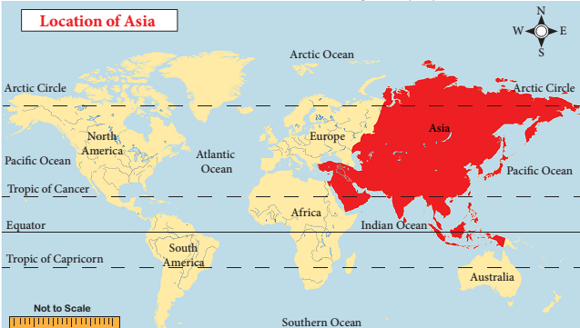
Asia is surrounded by the Arctic Ocean in the north, Pacific Ocean in the east, Indian Ocean in the south and the Ural Mountains, Caucasus Mountains, Red Sea, Mediterranean Sea, Caspian Sea and Black Sea in the west.
The Suez Canal separates Asia from Africa. The narrow Bering Strait separates Asia from North America.
There are fortyeight countries in Asia. The countries are grouped into several realms based on landscape and political status such as 1 East Asia, 2 Southeast Asia, 3 South Asia, 4 Southwest and 5 Central Asia.
Asia is the land of long mountain ranges, snow capped high mountains, vast plateaus, extensive plains, river valleys and sea coasts. These diverse physical features encourage the people of this continent to
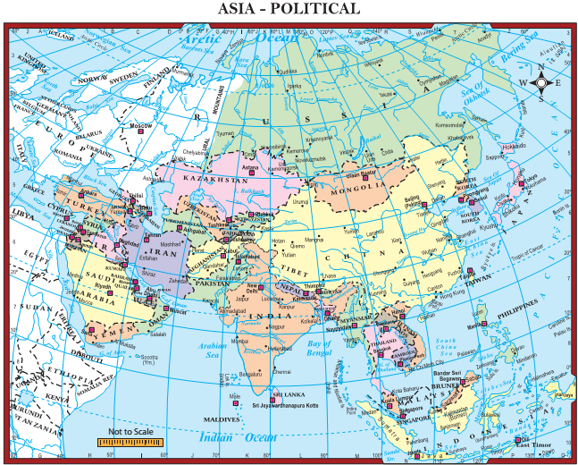
Fact: There are 12 landlocked countries in Asia. Among these, only one is doubly landlocked which means it is surrounded entirely by other landlocked countries. Find out the doubly landlocked country.
Involve in diverse economic activities. The physiography of Asia can be divided into five major groups. They are
1. The Northern lowlands
2. The Central High Mountains
3. The Southern Plateaus
4. The Great Plains and
5. The Island Groups
1. The Northern Lowlands
The most extensive lowland in Asia is the Siberian plain. It extends from the Ural Mountains in the west to the Verkhoyansk Range in the east.
2. The Central Highlands
The central highlands stretches from Turkey to the Bering Strait. There are two knots found in Asia. They are 1. The Pamir Knot 2. The Armenian Knot.
Box Item: 'Knot' refers to the convergence of mountain ranges
The Hindukush range, the Sulaiman range, the Himalayan range and the Tian Shan range radiate from the Pami Knot
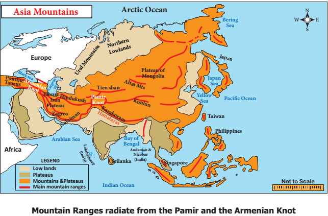
The Hindukush range continues westward as the Elburz, whereas the Sulaiman range continues south west as the Zagros range. The Elburz and the Zagros converge at the Armenian knot. The Taurus and the Pontine ranges radiate from the Armenian knot. The other important mountain ranges are the great Khingan, the Altai, the Verkoyansk and the Arakan yoma.
The Himalayan mountain range is the highest mountain range in the world. Mount. Everest Within Bracket 8848 meters isnot only the highest peak in Asia but also in the world.
The lowest point in the world is located in the Dead Sea in Asia. Intermontane plateaus are found in these mountain ranges. The important plateaus are
1. The plateau of Anatolia Within Bracket Pontine to Taurus
2. The plateau of Iran Within Bracket Elburz to Zagros Mount
3. The plateau of Tibet Within Bracket Kunlun to Himalayas
Box Item:
DO YOU KNOW?
Tibet is called the ‘Roof of the world’ and it is also known as the third pole because of its cold weather, largest reserve of freshwater and inhospitable environment.
Higher Order Thinking:
The Khyber Pass is located in the Sulaiman range, the Bolan Pass is located in Toba Kakar range. What is the importance of these two passes?
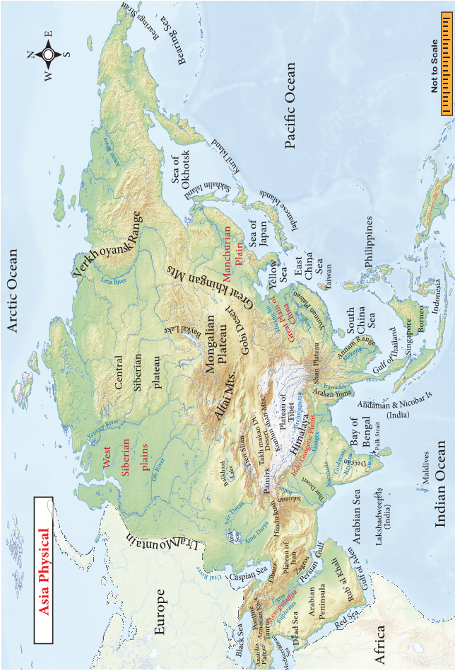
3. The Southern Plateaus
The southern plateaus are relatively lower than the northern plateaus. The four important southern plateaus are the Arabian Plateau Within Bracket Saudi Arabia, Deccan Within Bracket India, Shan Plateau Within Bracket Myanmarand the Yunnan Plateau Within Bracket China. Among these plateaus, the Arabian Plateau is the largest Plateau.
4. The Great Plains
The great plains are formed by the major rivers of Asia. They are the West Siberian plain Within Bracket Ob and Yenisey, Manchurian Plain Within Bracket Amur, Great Plain of China Within Bracket Yangtze and Sikiang, Indo-Gangetic Plain Within Bracket Indus and Ganga, Mesopotamian plain Within Bracket Tigris and Euphratesand the Irrawaddy plain Within Bracket Irrawaddy.
5. The Island
Numerous islands are found in the Pacific coast of Southeast Asia. Kuril, Taiwan, Singapore and Borneo are the important island. The Philippines, Japan islands and Indonesia are the major archipelagos in Asia. Smaller archipelagos are also located in the Indian Ocean such as the islands of Maldives and Lakshadweep are in the Arabian Sea. Bahrain is in the Persian Gulf. Sri Lanka is an island, which is located in the Bay of Bengal.
Box Item:
DO YOU KNOW?
A group of islands is called an archipelago. The largest archipelago is Indonesia.
The rivers of Asia originate mostly from the central highlands. The Ob, Yenisey and Lena are the major rivers that flow towards the north and drain into the Arctic Ocean. These rivers remain frozen during winter. On the other hand, South Asia has many perennial rivers Within Bracket exampleBrahmaputra, Indus, Ganga and Irrawaddy which originate from the snowcovered high mountains that do not freeze during winter. The Euphrates and Tigris flow in West Asia. The Amur, Hung Ho, Yangtze and Mekong rivers flow in the south and south eastern parts of Asia. Yangtze is the longest river in Asia
Table on Major Rivers of Asia
Serial Number |
Name of the River |
Origin |
Outflow |
Length in Kilometer |
Serial Number 1 |
River : Yangtze |
Origin: Tibetan Plateau |
Outflow: East China sea |
6,350Kilometer |
Serial Number2 |
River : Hung Ho |
Origin: Tibetan Plateau |
Outflow: Gulf of Pohai |
5,464 Kilometer |
Serial Number 3 |
River : Mekong |
Origin: Tibetan Plateau |
Outflow: South China Sea |
4,350Kilometer |
Serial Number4 |
River : Yenisey |
Origin:Tannuala Mountain |
Outflow: Arctic Ocean |
4,090Kilometer |
Serial Number 5 |
River : Ob |
Origin: Altai Mountain |
Outflow: Gulf of Ob |
3,650 Kilometer |
Serial Number 6 |
River Brahmaputra |
Origin: Himalayas |
Outflow: Bay of Bengal |
2,900 Kilometer |
Serial Number 7 |
River : Indus |
Origin: Himalayas |
Outflow: Arabian Sea |
3,610 Kilometer |
Serial Number 8 |
River : Amur |
Origin: Confluence of Shika and Argun rivers |
Outflow: Tatar Strait |
2,824 Kilometer |
Serial Number 9 |
River : Ganges |
Origin: Himalayas |
Outflow: Bay of Bengal |
2,525 Kilometer |
Serial Number10 |
River : Irrawaddy |
Origin: North Myanmar |
Outflow: Bay of Bengal |
2,170 Kilometer |
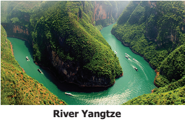
Box Item:
Do you know?
The Three Gorges dam has been constructed across the river Yangtze. It is the largest power station dam in the world. It fulfils ten percent of the power needs of China.
Asia exhibits a variety of climates. The northern part of Asia experiences severe long winters and short summer. Within Bracket Winter 37 degree Celcius and Summer 10 Degree Celcius. Precipitation is in the form of snow Within Bracket From 250 Millimeter to 300 Millimeter. The north eastern part of Asia experiences cold winter and warm summer and a moderate rainfall of 50 Millimeter to 250 Millimeter.
The south, south east and eastern parts of Asia are strongly influenced by monsoon winds. Summer is hot and humid while winter is cool and dry. The summer monsoon winds bring heavy rainfall to India, Bangladesh, Indo-China, Philippines and Southern China Within Bracket From 1500 Millimeter to 2500 Millimeter. In India, Mawsynram Within Bracket 11871 Millimeter receives the highest rainfall. So, this place is called the wettest place in the world.
The areas found in and around the equator have uniform climate throughout the year. There is no winter. The average temperature is 27degree Celcius and the mean rainfall is 1270 Millimeter.
Higher Order Thinking :
There is no winter in the equatorial region. Why?
The west and central parts of Asia have hot, dry climates. The temperature is very high during the day and very low during the night. Rainfall varies from 25 Millimeter to 200 Millimeter. The West coastal fringe of Asia Within Bracket along the Mediterranean Sea receives rainfall in winter and is warm in summer.
Deserts are found along the western part of Asia. The major hot deserts are the Arabian Within Bracket Saudi Arabiaand Thar Within Bracket India and Pakistan deserts. The cold deserts of Asia are Gobi and Taklamakan. The largest desert in Asia is the Arabian Desert.
Natural vegetation depends upon rainfall, temperature and soil. As Asia stretches from the equator to poles, all types of vegetation are found here. Some rare species are found in Asia. Such as Orang-Utan, Komodo Dragon, Giant panda. The Asian flora and fauna are listed below:
Serial Number |
Climate |
Location |
Flora |
Fauna |
Serial Number1 |
Climate: HighTemperature,High rainfall |
Location: Indonesia, Malaysia, Singapore, Srilanka |
Flora: Evergreen trees Mahogany, Rubber,Rosewood, Sal |
Fauna: Rhinoceros, Tiger, Babirusa, Orangutan,Komodo Dragon |
Serial Number2 |
Climate:Rainy summer, DryWinter |
Location: India, Vietnam,Cambodia,Thailand,Southern China |
Flora: Deciduous treesTeak, Sandalwood,Bamboo |
Fauna: Tiger, Elephant, Indian Cobra, viper |
Serial Number3 |
Climate:ExtremeClimate |
Location: Arabian desert,North, NorthWest India |
Flora: Cactus, Dates Within Bracket Oasis, Thorny shrubs, Babul tree |
Fauna: Bactrian Camel, The Sand grouse, desert oryx |
Serial Number4 |
Climate:Dry winter, Warm Summer |
Location: East China, Japan, North andSouth Korea |
Flora: Cherry, Apricot,Plum |
Fauna: Giant Panda, Japanesemacaque |
Serial Number5 |
Climate:Warm Summer and rainy winter |
Location: Israel, Lebanon,Turkey, Syria |
Flora: Figs, Olives, Citrus fruits |
Fauna: Lynx, Jackrabbit |
Serial Number6 |
Climate:Long and dry winter, short and cool summer |
Location: Siberia,Himalayas |
Flora: Coniferous trees Pine, Fir, Spruce |
Fauna: Siberian Tiger, Brown bear, Wolf |
Serial Number7 |
Climate:Permanent snow cover |
Location: Beyond the snowLine |
Flora: Lichen, mossesGrass |
Fauna: Polar bear, Lemming,Reindeer, Arctic fox |
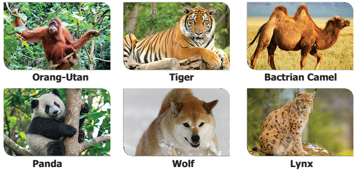
Fact: Desert
A Desert is a large area that gets very low rainfall and very few plants and animals. There are two types of deserts found in Asia, Hot and cold deserts.
BOX ITEMS
DO you know?
Rub-Al Khali desert is the largest, continuous sandy desert in the world. It is found in the southeastern part of Saudi Arabia.
Asia has a variety of mineral deposits. It holds an important place in the production of Iron, Coal, Manganese, Bauxite, Zinc, Tungsten, Petroleum, Tin Etcetera Oil and Natural Gas found in the west Asian countries. One third of the world’s oil is produced in Asia. Among the west Asian countries, Iran has a considerable wealth of mineral resources. The important minerals found in Asia are:
Iron Ore: Asia has the largest deposits of iron ore in the world. China and India are the important iron ore deposit countries of Asia. Turkey, Philippines, Malaysia, Thailand, Myanmar Etcetera . are a few other countries that have iron ore deposits.
Coal: Coal is a fossil fuel. Asia has the largest deposits of coal in the world. China and India are the largest producers of coal in Asia. Petroleum: Petroleum is a mineral oil. The largest petroleum reserves are found in South West Asia.
The important petroleum producing countries are Saudi Arabia, Kuwait, Iran, Bahrain, Qatar and United Arab Emirates. South China, Malaysia, Brunei, Indonesia, India, Russia are the other important petroleum producing countries in Asia.
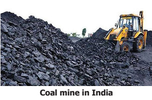
Bauxite is found in India and Indonesia. India is the largest producer of Mica in the world. Tin is found in Myanmar, Thailand, Malaysia and Indonesia.
Agriculture Only about 18 percent of the total area is cultivable in Asia. Agriculture is the chief occupation of the people here. The river valleys in the South, South East and East Asia have rich alluvial soil. Agriculture is intensively practised in the riverine plains of Asia. However, some areas are not suitable for agricultural practices. India has the largest area of arable lands in Asia. Most of the west Asian countries cultivate their crops where the groundwater level is nearer to the surface. Iraq practices agricultural activities based on the availability of rainfall and supply of water from Euphrates and Tigris rivers.
Rice and Wheat are the staple food crops in Asia. China and India are the leading producers of rice in the world. Other important rice producing countries are Myanmar, Japan, Bangladesh and Thailand. Monsoon Asia is suitable for rice cultivation because of the abundant rainfall, fertile plains and availability of labour. Thailand is called the Rice bowl of SouthEast Asia.
Box Item,
Do you know?
Banaue rice terrace: The Banaue rice terraces were built 2000 year ago by the Ifugaos people in the Philippines. It is located approximately 1524 Meter above sea level.
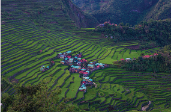
Wheat is grown in the temperate regions of Asia. Russia, India, China and Pakistan are the leading producers of wheat in Asia. Millets like Bajra, Jower, Ragi and Sorgham are grown in the drier parts of Asia. These are widely cultivated in India, Pakistan and a few gulf countries. Apart from these, pulses, spices and oil seeds are also cultivated in various parts of Asia.
Jute and cotton are the important natural fibres cultivated in Asia. One third of the world’s cotton is produced by Asia. The major cotton producing countries are India, China, Russia and Kazakhstan. India, Pakistan, China and Bangladesh are the leading producers of jute.
The tropical wet and dry climate is suitable for sugarcane cultivation in Asia. India, Indonesia and the Philippines are the major producers of sugarcane. Coffee, Tea, Rubber, Palm trees and Cocoa are the important plantation crops. India, Sri Lanka, Thailand, Vietnam, Malaysia and Indonesia are important producers of plantation crops. Malaysia and Thailand are the leading producers of natural rubber. Dates are produced in west Asia, among the countries Iran is the largest producer of dates in the world.
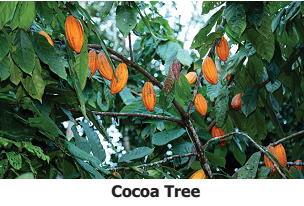
Fishing is an important economic activity in Asia. It is prevalent in open seas as well as inland water bodies. China and Japan are the leading fishing nations. In Cambodia, TonleSap lake is one of the world’s richest sources of freshwater fishing. Bay of Bengal is the major fishing ground for India, Sri Lanka, Myanmar and Bangladesh. Fishing is the mainstay of the national economy in Maldives. Pearl fishing Within Bracket Bahreinis popular in the eastern coast of Arabia.
In China, Manchurian, Shanghai Wuhan, PekingShenyang, Guangdone Hong Kong regions are the major industrial regions. In Japan, the major regions are Tokyo, Yokohama and Osaka-Kyoto
regions. In India, Mumbai, Ahmedabad, Coimbatore, Bengaluru and Chottanagpur are the important industrial regions.
Transport is the backbone of the economic development of a region. Many Asian countries are developing their transport network for their economic progress. Roadways are the most common mode of transport in Asia.
The Asian Highway connects Tokyo in the east to Turkey in the west, Russia in the north to Indonesia in the south and the total length of the road is 1,41,000 kilo meter . It passes through 32 countries. The Asian Highway 1 Within Bracket Asian Highway 1is the longest highway among the Asian Highway Network Within Bracket 20,557 kilo meter It connects Tokyo to Turkey. The Asian Highway 43Within Bracket Asian Highway 43 runs from Agra in India to Matara in Sri Lanka With in Bracket 3,024 kilometer .
The Trans - Siberian Railways Within Bracket 9258 kilo meters is the longest rail route in the world. It is a transcontinental railway line which connects Leningrad and Vladivostok. The Trans Asian Railway links Singapore and Istanbul in Turkey. The Shinkansen bullet train is the world famous super express train that runs between Osaka and Tokyo in Japan at a speed of 352 km/h. The Indian railway network is the second largest railway network in Asia.
The Cape of Good Hope route connects Europe to South Asia. The Trans Pacific route connects the ports of eastern Asia to the ports of western American countries. The Suez Canal route passes through the heart of the world trade route and connects Europe with South and Southeast Asia. Tokyo, Shanghai, Singapore, Hong Kong, Chennai, Mumbai, Karachi and Dubai are the important seaports in Asia.
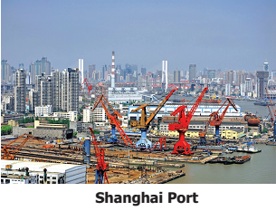
Asia is the most populated continent in the world. Approximately six-tenth of the world’s population lives in Asia. The population is unevenly distributed because of various physical features. China and India alone cover three fifths of Asia’s population. Apart from these two countries, Bangladesh, Indonesia, Japan, Pakistan and Philippines have more than 100 million populations. The population density in Asia is 143 persons per square Kilometres. India, Japan, Bangladesh and Singapore have high population density. River plains and industrial regions have high density of population, whereas low density is found in the interior parts of Asia.
Higher Order Thinking : Few countries in Asia have high populations. Give reasons.
Box Item, Do you know: ANGKORWAT: It is a world heritage site. It was built by king Suriya Varma 2 in 1100 Anno Domini Within Bracket Common Era at Cambodia. 'AngkorWat' means 'the city of temples' in Khmer language. It is the largest Hindu Temple in the world.
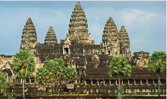
Hinduism, Islam, Buddhism Christianity and Sikhism are the major creeds in Asia. The minor creeds Zoroastrianism, Jainism, Shintoism, Confucianism and Taoism are also practised in Asia. Mandarin, English, Indonesian, Japanese, Arabic, Korea, Vietnamese and Hindi are the most widely spoken languages in Asia.
Asia is the homeland of three civilizations. Within Bracket Mesopotamian, Indus valley and Chinese civilizations. These three contributed to the architectural works at an early stage. Among the seven wonders of the world, two are located in Asia Within Bracket The Taj Mahal in India, The Great wall of China. The people of Yemen built a mud skyscraper thousands of years ago. AngkorWat in Cambodia, Buddhist Temple in East and Southeast Asia, Mosques in west Asia and the temples and forts in India are five examples of Asian architecture.
Rice, Wheat, Maize and Barley are the staple food in Asia. Dairy products, fruits and nuts are also consumed. In East Asia, bread and noodles are the staple food where rice is not available. Tea, Coffee and green tea are the chief beverages. In West Asia, meat, herbs and olive oil are the prime ingredients in their food.
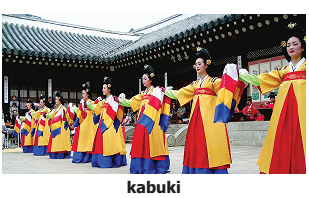
In Asia, Yangee, Dragon Dance, Kabaki are popular in East Asia, Ram Thai in Thailand, Bhangra, Kathak and Bharathanatyam in India are also important dances in Asia. Sufi music and Arabic classical music are common in west Asia. Tinikling is the national dance of the Philippines.
The midautumn festival or moon festival in China, Taiwan and Vietnam. Holi and Mahara Sankaranthi or Pongal in major parts of India and Sukkoth in Israel are the importantharvest festivals of Asia. The snow sculpture festival, Chinese New Year, Thaipoosam, Diwali, Taiwan Lantern festival, Songkran, winter light festival are also some of the famous festivals in Asia.
Asia is the biggest continent. It has different types of land features such as mountain, plateau, plain, valley, bay, island etc. It also has different climatic conditions from the equator to polar region. Apart from this, many races, languages, religions and cultures are followed by people who live in Asia. So, Asia is called 'the land of contrasts'.
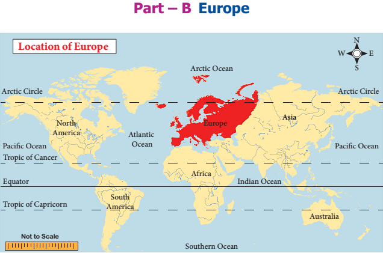
Europe is the sixth largest continent in size and the third largest in population in the world. It has diverse landforms and people. It is the birthplace of western civilizations Within Bracket Roman and Greek, democracy and Industrial Revolution. It is the most developed continent in the world. Let us explore the continent.
Europe spreads from 34 Degree 51 Minutes North latitude to 81 Degree 47 Minutes North latitude and from 24 Degree 33 Minutes Within West longitude to 69 Degree 03 Minutes East longitude. The Prime Meridian 0Degree longitude passes through Greenwich in England.
Europe is found in the northern hemisphere and it covers an area of 10.5 million square kilometres. It is surrounded by the Arctic Ocean in the North, the Black Sea and Mediterranean Sea in the south, the Atlantic Ocean in the west and the Uralmountains in the east. So it looks like a giant peninsula.
Higher Order Thinking : Europe is called the 'Peninsula of Peninsulas', Justify.
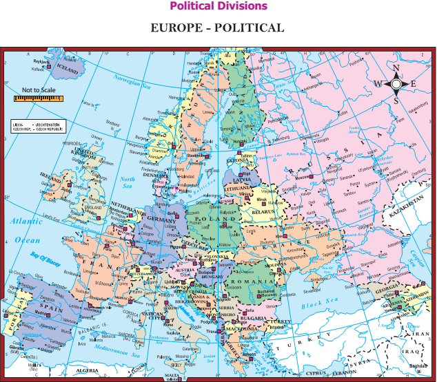
Box Item,
Do you know:
European Union:
The European Union Within Bracket EUis an economic and political union of 27 member countries for their welfare. It has its own flag and the common currency, the Euro Within Bracket €.
Fact:
The Netherlands: About 25 percent of the Netherlands lies below sea level. So they have built dikes. They have reclaimed new land from the sea with the help of dikes. These reclaimed lands are called polders.
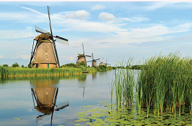
Europe has diversified physical features such as mountains, plains, plateaus, peninsulas, bays, islands and river basins. It can be divided into four physical divisions.
1. The North Western Highlands
2. The Central Plateaus or High land
3. The Alpine Mountain system
4. The North European plains
This region includes the mountains and plateaus of Norway, Sweden, Finland, Scotland and Iceland. This region has the most beautiful fjord coast. It was created by glaciations in the past. This region has a lot of lakes, which serve as reservoirs for producing hydroelectricity. Norway and Sweden are the largest producers of hydroelectricity in the world.
Fact:
Fiord: A fjord is a narrow and deepsea inlet between steep cliffs.
1. It reduces the speed of wind, irrespective of its direction.
2. The force of sea waves are also controlled. Hence, areas with fjords are best suited for natural harbours.
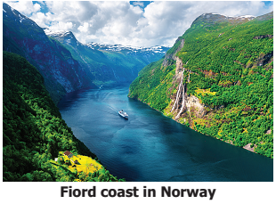
The plateaus are found in east-west direction across central Europe. Many rivers in Europe such as the Danube, the Volga and the Tagus originate from this plateau. The important plateaus of this region are The Pennines Within Bracket England, The Meseta Within Bracket Spain, The Central Massif and Jura Within Bracket France. The Blackforest Within Bracket Germany in this region has rich mineral resources. The Pennines is called the backbone of Engl
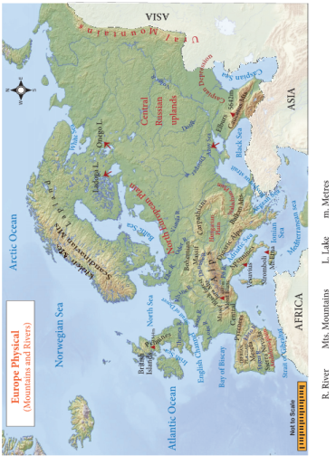
Box Item
Do you know
Blackforest: The lush and dark coloured figure and pine trees give black colour to this region.
The alpine mountain system consists of a chain of young fold mountains found in the southern part of Europe. The important mountain ranges are the Sierra Nevada, the Pyrenees, the Alps, the Apennines, the Dinaric Alps, the Caucasus and the Carpathian. The Pyrenees form a natural boundary between Spain and France. The highest peak in Europe is Mount. Elburz Within Bracket 5645 meters in the Caucasus range. The Mont Blanc Within Bracket 4,807 meterfound in the Alps is the second highest peak in the Alpine System.
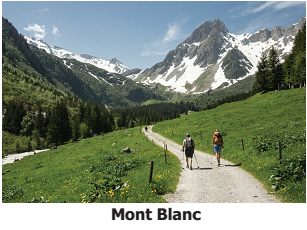
There are several active volcanoes found in the Alpin mountain system. Mount. Etna, Mount. Vesuvius and Mount. Stromboli are the important volcanoes found in Europe. Earthquakes are common in this region. The Stromboli is called the 'light house of the Mediterranean'.
Box Item,
Do You Know?
The Matterhorn:
The pyramid-shaped Matterhorn Mountain is located in the Swiss Alps at a height of 4478 meters. It is popular for its shape.
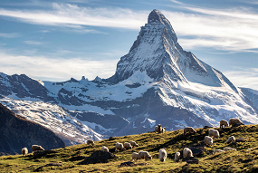
The north European plain stretches from the Atlantic Ocean in the west to the Uralmountains in the east. On the north, it is surrounded by the Baltic Sea and on the South by the alpine mountain. It is narrow in the West and wide towards the East.
Major European rivers such as the Seine, the Rhine, the Danube and the Don criss-cross this region and deposit their alluvium.
The Andalusian Plain, The Hungarian Plain and the Wallachian.
Plains are also found in this region. It has rich deposits of coal and iron ore. The north European plain is a densely populated region and cities like Paris, Moscow and Berlin are located here.
The rivers play an important role in the development of Europe. These rivers are used to irrigate farmland and also help to produce electricity.
The Important Rivers in Europe are given in the table below
Serial Number |
Rivers |
Length in Kilometer |
Source |
Outflow |
Serial Number 1 |
River: Volga |
Kilometer: 3,692 |
Source: Valdes Plateau |
Outflow: Caspian Sea |
Serial Number 2 |
River: Danube |
Kilometer: 2,860 |
Source:Black Forest |
Outflow Black Sea |
Serial Number 3 |
River: Dnieper |
Kilometer: 2,145 |
Source:Valdai Hills |
Outflow: Black Sea |
Serial Number 4 |
River: Rhine |
Kilometer: 1,230 |
Source:Alps Within Bracket Switzerland |
Outflow: North Sea |
Serial Number 5 |
River: Rhone |
Kilometer: 813 |
Source: Swiss Alps |
Outflow: Mediterranean Sea |
Serial Number 6 |
River: Po |
Kilometer: 652 |
Source: Cottian Alps |
Outflow: Adriatic Sea |
Serial Number 7 |
River: Thames |
Kilometer: 346 |
Source: Kemble |
Outflow: North Sea |
Most of the rivers originate in the Alps and the central plateau of Europe. These rivers are useful for inland navigation in central and Eastern Europe. The Volga is the longest river in Europe. The river Danube passes through Ten countries in Europe.
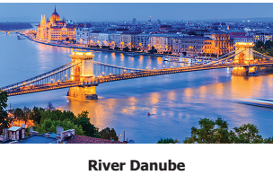
Higher Oder Thinking :
Why are European rivers suitable for inland navigation?
The climate of Europe varies from the subtropical to the polar climate. The Mediterranean climate of the south has warm summers and rainy winters. The western and north western parts have a mild, generally humid climate, influenced by the North Atlantic Drift. In central and eastern Europe, the climate is humid continental-type. In the northeast, subarctic and tundra climates are found. The whole of Europe is subject to the moderating influence of prevailing westerly winds from theAtlantic Ocean.
Box Item:
Do you know?
Climate Divider: The Alpsmountain separates the Mediterranean climate from the cold climate of the north.
Fact: North Atlantic Drift. It is a warm ocean current which brings warmth to the western Europe. The westerly wind further transports warmth across Europe.
The natural vegetation of Europe can be classified as follows:
1. Tundra
2. Taiga or Coniferous
3. Mixed Forest
4. Mediterranean Forest
5. Grassland
The Arctic and northern Scandinavian highlands have a Tundra type of vegetation made up of lichens and mosses.
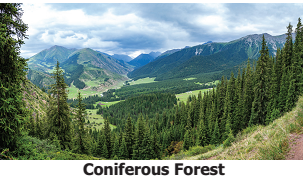
Coniferous Forest Coniferous or Taiga vegetations are found to the south of the Tundra region in Norway, Sweden, Finland, Germany, Poland and Austria. Pine, fir, spruce and larch are the important tree varieties of taiga forest.
The mixed forest comprising of birch, beech, poplar, oak and maple trees found in the western part of Europe particularly in western France, Belgium, Denmark, Britain etcetera. Mediterranean trees like cypress, cork, oak, olive and cedar are found along the borders of the Mediterranean Sea. Eastern Europe is covered by grasslands Within Bracket Steppe.
Availability of resources, efficient educated work force, research, contact with other nations and innovations have transformed Europe into a modern and economically developed continent in the world.
Europe is an industrially developed continent in the world. It has great diversity in its topography, climate and soil. These interact to produce varied patterns of agricultural activities such as Mediterranean agriculture, Dairy farming, mixed livestock and crop farming and horticulture Within Bracket Truck Farming
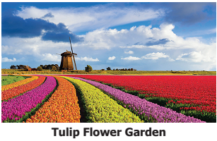
Wheat is the dominant crop throughout Europe. Barley, Oats, sugar beet, rye, potatoes and hay are also common crops. Corn Within Bracket maizeis an important crop in the lower Danubian lowlands and southwestern European Russia, France and Italy. Rice Within Bracket northern Italy and citrus fruits, olive trees Within Bracket Spain, Sicilydepend on irrigation.
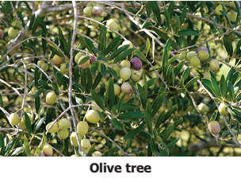
Olive tree The northernmost countries grow few cereals Within Bracket mainly oatsand concentrate on animal husbandry, especially cattle and dairying. Mixed farming and the use of welltried crop rotations are widely practised. Viticulture is mostly practised in Italy, France and Germany.
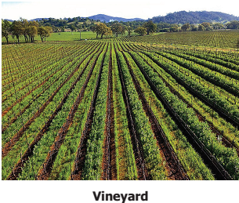
As for industrial crops, European Russia, Ukraine, and Belarus are large producers of flax and hemp, sugar beets and sunflower seeds. Tobacco is grown in Belarus and is also important in Bulgaria, Italy, and Macedonian Greece. European Russia, Sweden and Finland are the major producers of softwood and hardwood. Fishing is a large industry in Norway, Iceland, Russia, Denmark, the United Kingdom, the Netherlands Etcetera , The Dogger Bank in the North Sea is an important fishing ground in Europe.
Europe produces a significant portion of the world’s steel and iron ore. Shipbuilding, motor-vehicle and aircraft construction are widely distributed all over Europe. Europe is also a large producer of pharmaceutical drugs.
A wide range of small-scale industries Within Bracket That is those that produce nondurable goods are found throughout Europe. Some countries have a reputation for specialty goods, as in the case of English, Italian, and Dutch bicycles, Swedish and Finnish glass, Parisian perfumes and fashion goods and Swiss precision instruments.
Europe is the third most populous continent, after Asia and Africa. The population of Europe was 742 million in 2018, which accounted for 9.73 Percent of the world’s population. The population density in Europe is 34 persons per kilometre square.
High population density is often associated with the coalfields of Europe. Other populous areas are sustained by mining, manufacturing, commerce, offering a large market, labour forces and productive agriculture. Monaco, Malta, San Marino, and the Netherlands are the most densely populated countries; Iceland and Norway have very low density of population. In general, population is scanty in the mountain regions, some highlands, arid parts of Spain and the Arctic regions of Russia. Monaco has the highest density of population in Europe Within Bracket 26,105 persons per squarekilometre as well as in the world. Iceland has a very low density ofpopulation Within Bracket 3 persons per kilometre square.
Europe is a continent of great linguistic and cultural difference. English, Spanish, Portuguese, French, Italian and Slavic are the broadly spoken languages in Europe. Christianity is the major religion in Europe. A considerable number of Hindus, Muslims and Jews are spread throughout Europe. More than 90 percent of the people belong to the Caucasoid race.
European art and architecture mostly reveals the ordinary human being and is popular all over the world. Acropolis, the Colosseum, the statue of David, The thinker, Eiffel tower, Big Ben, Pisa Tower and Mona Lisa are some of the masterpieces of art and architecture in Europe.
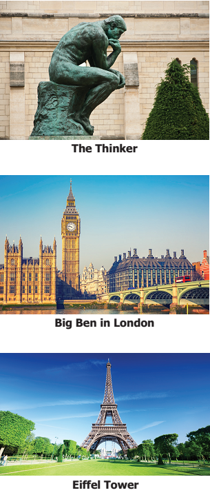
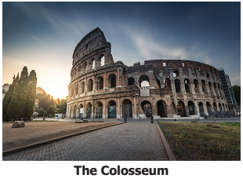
Bread, fish, meat, potatoes and dairy products are the staple food in Europe. The Europeans celebrate both religious and holiday festivals. Christmas, Easter, Good Friday, the Saint Day, Redentore, Tomatina and Carnival are the important festivals of Europe. They play Rugby, football, basketball, ice hockey and skiing. Bull fighting in Spain is the world's most attractive game.
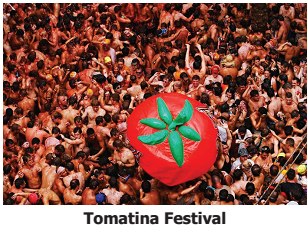
Asia and Europe are integrated geographically and separated politically. Europe is the giant peninsula of Asia. Both the Himalayas Within Bracket Asia and the Alps Within Bracket Europewere formed during the same geological period. The Steppe grasslands and coniferous forests are spread over several hundred kilometres from Europe to Asia. Generally, the plains are found in the northern part and the mountains in the southern part in both the continents. The two continents are the homeland of ancient civilizations. From the ancient period, these two continents had trade relationships through the silk route and the spice route. Despite the various geographical similarities, these two continents have striking differences.
Asia |
Europe |
1. Asia is the largest continent, both by area and population. |
1. Europe is the smallest continent by area and the most developed. |
2. Asia extends from 10 Degree 11Minutes South to 81Degree 12 Minutes North latitudes. That is, from the equatorial region to the polar region. |
2. Europe extends from 34 Degree 51 Minutes North to 81Degree 47 Minutes North latitudes. That is, from the subtropical region to the polar region. |
3. Asia is located on the eastern hemisphere |
3. Europe is located at the centre of the earth. |
4. AsiaThe Bering Strait separates Asia and North America. |
4. Europe The Strait of Gibraltar separates Europe from Africa. |
5. AsiaThe Arabian, Indo China, India and Korea are the important peninsulas in Asia. |
5. Europe The Scandinavian, Iberian, Italian and Balkan are the important peninsulas in Europe. |
6. AsiaThe important parallels such as the Equator, Tropic of Cancer, Arctic Circle pass through it. |
6. Europe Only the Arctic Circle passes through it. |
7. AsiaAll kinds of climatic conditions are found here. It also enjoys the distinctive monsoon type of climate Southern Asia receives summer rainfall. |
7. Europe lies largely in the temperate zone. It enjoys the distinctive Mediterranean type of climate. Southern Europe receives winter rainfall. |
8. AsiaBoth hot and cold deserts are located here. |
8. Europe There are no deserts here. |
9. Asia It has a variety of mineral deposits. |
9. Europe Mineral resources are limited, except for coal and iron. |
10. Asia Plantation crops such as tea, rubber and dates are largely cultivated in Asia. |
10. Europe Citrus fruits, olives and grapes are cultivated mostly in Asia. |
11. AsiaA majority of people in Asia are involved in primary activities. |
11. Europe A majority of people in Europe are involved in secondary and tertiary activities. |
Asia is the largest and the most populous continent in the world. It is divided into five physical divisions.
From the equator to the poles, all types of climate are found in Asia.
The treeless polar region to dense equatorial forest are found in Asia.
Iron ore, coal, petroleum, Bauxite, mica, tin, zinc etcetera .are the chief minerals found in Asia.
Rice, wheat, sugarcane, jute, cotton, tea, coffee and dates are the important crops.
Asia is the birthplace of all religions.
Europe is the sixth largest continent. It is divided into four physical divisions.
The European rivers play a Vital role to the country's economy.
Europe experiences a cool temperate climate.
Mixed farming is the most widely practised type of agriculture in Europe.
Coal and Iron ore are cheap minerals found in Europe.
Christianity is the major religion in Europe.
Beverage a drink other than water
Perennial Continuing throughout the entire year
Monsoon wind the seasonal wind of the Indian ocean
Tundra A vast, flat, treeless Arctic
Riverine Situated beside a river
Staple food food that makes up the dominant part of people’s diet
Irrigation The artificial application of water to land
Husbandry The care, cultivation and breeding of crops and animals
Viticulture The cultivation of grapevines
Steppes a large area of flat unforested grassland in Siberia.
Polder A piece of low-lying land reclaimed from the sea
Race a group of people who have similarities in biological traits.
Horticulture the art of garden cultivation and management Within Bracket vegetables,fruits and flowers
1. Choose the correct answer
1. Which is not the western margin of Asia?
a) Black Sea
b) Mediterranean Sea
c) Red Sea
d) Arabian Sea
Answer: d) Arabian Sea
2. The Intermontane dash plateau is found between Elbruz and Zagros.
a) Tibet
b) Iran
c) Deccan
d) The Yunnan
Answer: b) Iran
3. Equatorial climate:
1 Uniform throughout the year.
2 The average mean rainfall is 200 Millimeter.
3 The average temperature is 10 Degree Celsius
4 Of the statements given above,
a) 1 alone is correct
b) 2 and 3 are correct
c) 1 and 3 are correct
d) 1 and 2 are correct
Answer: a) 1 alone is correct
4. Match list 1 correctly with list 2 and select your answer from the codes given below.
List 1 List 2
A. Malaysia 1. Figs
B. Thailand 2. Rubber
C. Korea 3. Teak
D. Israel 4. Cherry
Codes
A B C D
a) 2, 3, 4, 1
b) 4, 3, 2, 1
c) 4, 3, 1, 2
d) 2, 3, 1, 4
Answer: a) 2, 3, 4, 1
5. India is the leading producer of DASH.
a) Zinc
b) Mica
c) Manganese
d) Coal
Answer: b) Mica
6. The natural boundary between Spain and France is DASH.
a) The Alps
b) The Pyrenees
c) The Carpathian
d) The Caucasus
Answer: b) The Pyrenees
7. The western and north-western Europe enjoys mild and humid climate.
Choose the correct option:
a) These regions are found near the equator
b) It is influenced by the North Atlantic Drift
c) It is surrounded by mountains
d) All of the above
Answer: b) It is influenced by the North Atlantic Drift
8. Which of the following statements is incorrect?
a) Europe produces electricity from hydel power
b) All the rivers of Europe originate in the Alps
c) Most of the rivers in Europe are used for inland navigation
d) The rivers of Europe are perennial in nature
Answer: b) All the rivers of Europe originate in the Alps
9. Choose the incorrect pair.
a) The Meseta - Spain
b) The Jura - France
c) The Pennines - Italy
d) The Black Forest - Germany
Answer: c) The Pennines - Italy
10. Which country in Europe has a very low density of population?
a) Iceland
b) The Netherlands
c) Poland
d) Switzerland
Answer: a) Iceland
2. Fill in the blanks.
1. The Taurus and the Pontine ranges radiate from the dash Answer: Armenian knot
2. The wettest place in the world is dash knot. Answer: Mawsynram
3. Iran is the largest producer of dash in the world. Answer: Dates
4. Europe connected with south and south east Asia by dash sea route. Answer: Suez Canal
5. The national dance of the Philippines is dash Answer: Tinikling
6. The second highest peak in Europe is dash Answer: Mount Blanc
7. The type of climate that prevails in the central and eastern parts of Europe is dash Answer continental type
8. The important fishing ground in the North Sea is dash. Answer: Dogger bank.
9. The density of population in Europe is dash. Answer: 34 persons per square kilometer
10. The river dash passes through ten countries of Europe. Answer: Danube.
3. Match The Following
1 Mesopotomian Plain Highest Rainfall
2 Mawsynram Norway
3 Rice Bowl of Asia Spain
4 Fjord Coast Euphrates & Tigris
5 Bull Fighting Thailand
Answer:
3. Match The Following
1. Mesopotomian Plain Euphrates& Tigris
2. Mawsynram Highest Rainfall
3. Rice Bowl of Asia Thailand
4. Fjord Coast Norway
5.Bull Fighting Spain
4. Let us learn
1. Assertion (A): Italy has dry summers and rainy winters
Reason (R): It is located in the Mediterranean region
OptionA) Both A and R are individually true and R is the correct explanation for A
Option b) Both A and R are individually true but R is not the correct explanation for A
Optionc) A is true, but R is false
Optiond) A is false, but R is true
Answer: d) A is false, but R is true
2. Places marked as 1, 2, 3 and 4 in the given map are noted for the following plains.
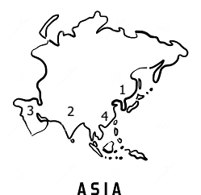
A. Indo – Gangetic plain
B. Manchurian plain
C. Mesopotamian
D. Great plains of China
Match the plains with the notation on the map and select the correct answer using the codes given below.
Codes are given in the table below:
|
A |
B |
C |
D |
a |
2 |
1 |
4 |
3 |
b |
2 |
1 |
3 |
4 |
c |
1 |
2 |
3 |
4 |
d |
1 |
4 |
3 |
2 |
Answer: b 2 1 3 4
3. In the given outline map of Asia, the shaded areas indicate the cultivation of
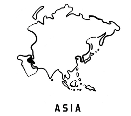
a) sugarcane
b) Dates
c) Rubber
d) Jute
Answer: b) Dates.
5. Answer in Brief
1. Name the important intermontane plateaus found in Asia.
2. Write a short note on monsoon climate.
3. How does physiography play a vital role in determining the population of Asia?
4. Name the port found is Asia.
5. Asia is called the ‘Land of Contrasts’- Justify.
6. Name the important mountains found in the Alpine system.
7. What are the important rivers of Europe?
8. Name a few countries which enjoy the Mediterranean type of climate.
9. Give a short note on the population of Europe.
10. Name the important festivals celebrated in Europe.
6. Distinguish
1. Intermontane plateaus and southern plateaus.
2. Cold desert and hot desert
3. Tundra and Taiga.
4. The North western highlands and the Alpine mountain range.
7. Give Reasons
1. Asia is the leading producer of rice.
2. Asia is the largest and most populous continent in the world.
3. Europe is called ‘a giant peninsula’.
4. Although Western Europe is located in the high latitudes, it has a moderate climate.
8. Answer in Paragraph
1. Give an account of the drainage system in Asia.
2. Describe the mineral sources found in Asia.
3. What are fjords? How do they protect harbours from bad weather conditions?
4. Describe the climatic divisions of Europe.
9. Map Skill
Mark the following in the outline map of Asia and Europe.
Asia: Ural mountain, Himalayas, Pamir knot, Gobi Desert, Arabian Peninsula, Deccan plateau, River Yangtze, River Ob, Aral Sea and Lake Baykal.
Europe: The Pyrenees, Black forest, Apennines, Hungarian Plain, Caucasus Mountain, River Volga, River Danube, Strait of Gibraltar, Lake Ladoga, North Sea
10. Activity
1. Complete the following.
I belong to dash district. My district is famous for the following: 1. dash, 2. dash and 3. dash. The boundaries of my districts are dash in the north, dash in the east, dash in the south and dash in the west. It spreads for an area of dash square kilometers. There are dash taluks and dash villages in my district. dash dashdash are the important mountain or plain or plateausWithin Bracket If all, mention all features. The rivers dash, dash, dash criss – cross my district. dash,dash, dashare common trees and wildlife such as dash,dash, dash are found here. dash, are important minerals available in my district. Based on this dash, dash industries are located here. The major crops are dash,dash, dash. Within bracket Coastal districts may write the variety of fish. The total population is dash. We celebrate dash,dash, dash festivals.
Answer:
1. Thirunelveli
2. Nellaiappar temple
3. Kutralam
4. Halwa
5. Virudunagar
6. Tuticorin
7. Kanyakumari
8. Western Ghats
9. 6823 sq.km.
10. 16 taluks.
11. 559 villages
12. Thamirabarani
13. Chittar
14. Manimutharu.
15. Palm
16. Neem tree
17. Coconut
18. Monkeys
19. Tigers
20. Elephant
21. Blue metal.
22. Limestone
23. Thorium
24. Cement.
25. Ginning.
26. vessels
27. Paddy
28. Cotton
29. Sugarcane
30. rice
31. maize
32. 5 lakhs and eighty three thousand
33. Pongal
34. Deepaawali
35. Christmas.
2. If you get a chance to settle in Europe, which country would you choose? List out the reasons why?
3. Choose any region in Asia. In the map of Asia, mark its distribution of natural vegetation and wildlife. Paste related pictures.
Reference
1. Douglas L. Johnson, Viola Haarmann, Merril L. Johnson, David L. Clawson Within Bracket 2012, World Regional Geography, A Development Approach, PHI Learning Private Limited, New Delhi, India.
2. JohnCole, Within Bracket 2010, Geography, of the world’s Major Regions, Routledge, London.
3. Majid Husain Within Bracket 2017, Indian and world Geography McGraw Hill Education Within Bracket India Private Limited, New Delhi, India.
Web links
1. https://www.whatarethe 7continents.com
2. www.natural history on the Net.com
3. www.worldatlas.com
4. www.internetgeographynet
I C T CORNER
Asia and Europe
Through this activity you will know about in their proper location on the map of Asia and Europe.
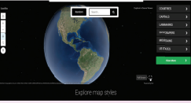
Steps:
Explore map styles
Step 1 Use the URL or scan the QR code to open the activity page.
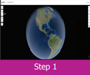
Step 2 Click the "Search" box and text Asia and Europe.
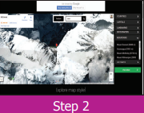
Step 3 Click the "+" "-" button to zoom in and out.
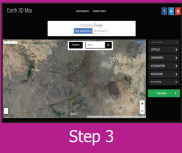
Step 4 Click the "Full screen" option to appear full screen mode.
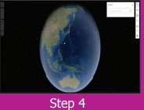
Browse in the link Web: http://earth3dmap.com/#?l=asia
Within Bracket or scan the Quick Response Code
To understand the four cardinal directions.
To learn about the shape of the Earth.
To understand about the model of the Earth - the globe.
To understand the significance of lines of latitudes and longitudes.
To know how standard time is calculated around the world.
Surya and Poovendhan are very good friends who study in the sixth standard and live in a beautiful village called Thirunandriyur. Surya lives in South Street, while Poovendhan lives in North Street. Every day they go to school together. One day.
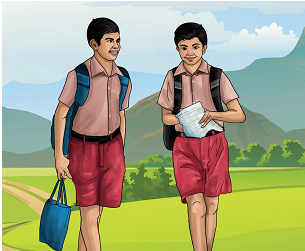
Surya: Why are you coming so late, Poovendha?
Poovendhan: Please bear with me, Surya! Come, let’s go.
Surya: What took you so long?
Poovendhan: You live on South Street. But, I have to come from North Street, which is so far away from here. That’s why I’m late.
Surya: Yes, that’s true. But wherever we live, don’t you remember that we all live on planet Earth?
Poovendhan: Yes! Yes! I do remember, Even our Ponni Miss taught us about the Solar System.
Surya: But, I have a doubt ….
Poovendhan: Tell me, what is it?
Surya: We can see our house, the things around us, the people, animals and birds with our eyes. But, why can’t we see our Earth as a whole?
Poovendhan: Haven’t you seen it?
Surya: No, I haven’t. Have you ever seen it?
Poovendhan: Yes, in our school only.
Surya: Did you say, in our school?
Poovendhan: Yes, on our Ponni Miss’ table. Big and spherical!
Surya: Oh! Yes! Like a ball on a stand?
Poovendhan: Exactly! That is our Earth
Surya: But........ But, our teacher said that our Earth is in the Milky Way Galaxy. But you say that our Earth is on our teacher’s table. I am so confused. Come, let’s go and ask Ponni Miss.
The bell rang as they reached school. They attended the morning assembly and went to the classroom. During the social science period, Surya asks Ponni Miss to clear his doubts.
Surya: Good morning, Miss.
Teacher: Good morning.
Surya: Madam, you told us on the other day that our Earth is in the Milky Way galaxy.
Teacher: Yes, it is true. This is the model of the Earth.
Surya: A model of the earth, Madam? Please explain!
Teacher: Sure, Surya. The teacher asks all the students to sit down and starts explaining.
The directions on the ground are always shown with respect to the North. If we know the North, then it is easy to find the other directions, namely South, East and West. These are the four cardinal directions.
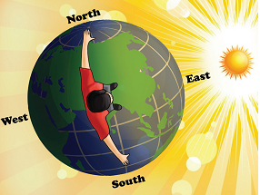
We know that the Sun rises in the East and sets in the West. If we stand facing the sun in the morning, then we face the east. The west is towards our back. The left hand points towards the north and the right hand points towards the south. We should always keep this in mind.
We live on the planet Earth, which is found third from the Sun. Since the Earth is huge and we live in a very small area, we are not able to see the Earth as a whole. But, when we travel to space, we can see the Earth as a whole.
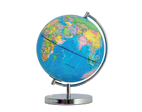
So, in order to see the shape of the Earth as a whole and to know its unique features, a three dimensional model of the Earth was created with a specific scale.
Box Item
Do you Know?The surface area of the Earth is 510.1 million square kilometres.
The Earth, which is spherical, is flat at the poles and bulges at the Equator. The Earth cannot be compared with any other geometrical shape as it has a very unique shape. Hence, its shape is called a geoid With in Bracket earth shaped.
The Earth moves around the Sun. It also rotates from the West to East on its axis at an inclination of 23 and half Degree. The globe is also inclined at an angle of 23 and half degree. The axis is an imaginary line. It is not actually found on the Earth.
Box Item,
Do you Know?
The first globe was created by the Greeks in the year 150 Anno Domini with in Bracket Common Era.
The Indian astronomer Aryabhata was mentioned in his book.
‘Aryabhatta Sidhantha’. ‘The stars in the sky seem to move towards the West because of the Earth’s rotation on its axis’.
There are imaginary lines which are drawn on the globe horizontally and vertically to find a location and calculate distance and time. These imaginary lines are called lines of latitudes and longitudes.
Box item
Do you know
Ptolemy, a Greco – Roman mathematician, astronomer and geographer, was the first person to draw the lines of latitude and longitude on a map.
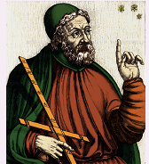
In his book, ‘Geographia’ a detailed description about the Earth’s surface, its size and circumference and many locations based on the lines of latitude and longitude are given.
The imaginary lines which are drawn horizontally in the East - West direction on the Earth are called the lines or parallels of latitudes.
The 0 Degree line of latitude which divides the Earth into two halves is known as the Equator. From the Equator, parallel lines are drawn towards the North and South poles at equal intervals. The latitudinal the extent between the 1 Degree line of latitude on Earth is 111 Kilo meters.
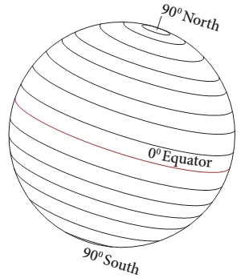
Since the Earth is geoid shaped, the length of the lines of latitude decreases from the Equator towards the South and North Poles. The 90-degree North and South Poles are not found as lines, but as points.
The lines of latitude that are drawn horizontally between the Equator and the North Pole are called ‘Northern Latitudes’ and those which are found between the Equator and the South Pole are called ‘Southern Latitudes’.
The lines of latitude consist of 89 parallels in the Northern Hemisphere and 89 parallels in the Southern Hemisphere, one at the Equator and the two poles are found as points. In Totally, there are 181 parallels found on earth.
Box Item
Do you Know?
The Equator is the longest of all lines of latitude. Hence, it is also known as ‘The Great Circle’.
Activity:
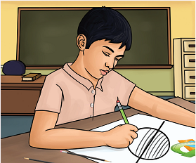
Draw a circle on a paper. Draw a horizontal line across the middle of a circle. Keeping this line as 0 Degree, draw lines on both sides with an equal interval of 15 Degree with the help of a protractor. The lines you have drawn are lines of latitudes.
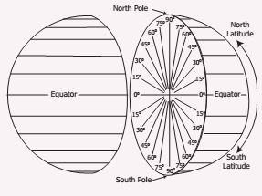
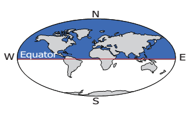
The area of the Earth found between the Equator Within Bracket 0 Degree and the North Pole with in Bracket 90 Degree North is called the Northern Hemisphere.
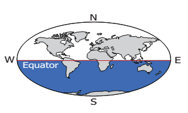
The area of the Earth from the equator With in Bracket 0 Degree to the South Pole with in Bracket 90 Degree North is called the Southern Hemisphere.
The location of any country or place is based on this division of the hemispheres.
Higher Order Thinking: Based on the latitudinal extent, in which hemisphere is India located?
The earth rotates on its axis at an inclination of 23 and Half Degree. It also revolves around the sun while rotating. Based on the angle at which the sun’s rays fall on the earth, certain lines of latitude gain significance.
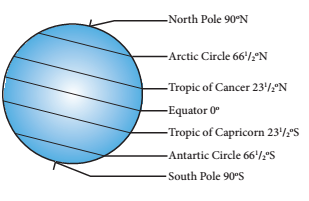
Box Item
Do you Know?
0 Degree North and South – 23 and Half Degree North and South lines of latitudes are called – Low latitudes
23 and Half Degree North and South – 66 Half DegreeNorth and South lines of latitudes are called –Middle Latitudes
66 and HalfDegreeNorth and South – 90 Degree North and South lines of latitudes are called –High Latitudes
With in Bracket Source: A Dictionary of Geography – Susan Mayhew, Oxford University Press, Fifth edition 2015
The Sun’s rays do not fall equally on all parts of the earth. They fall vertically over the Equator and slanting towards the poles. Thus, all the places on earth do not have the same amount of temperature. Based on the amount of heat received from the Sun, the lines of latitude help in dividing the earth into different climatic zones.
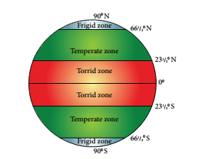
The region from the Equator towards the Tropic of Cancer with in Bracket 23Half DegreeNorth and the Tropic of Capricorn With in Bracket 23Half DegreeSouth is called the Torrid Zone. The Sun’s rays fall vertically over this region and the average temperature is very high. Hence this region is known as the Torrid Zone.
From the Tropic of Cancer With in Bracket 23North to the Arctic Circle With in Bracket 66Half DegreeNorth and from the Tropic of Capricorn With in Bracket 23Half DegreeSouth to the Antarctic Circle With in Bracket 66Half DegreeSouth, the Sun’s rays fall slantingly. Moderate temperature prevails in this region. Hence, this region is called the Temperate Zone.
From the Arctic Circle With in Bracket 66 andHalf DegreeNorth to the North Pole With in Bracket 90 Degree North and from the Antarctic Circle With in Bracket 66Half DegreeSouth to the South Pole With in Bracket 90 Degree South, the Sun’s rays fall further inclined, throughout the year. The temperature is very low. Hence, this region is known as Frigid Zone.
Box Item
Do you Know?
Some lines of latitude are also called by the following names in Tamil.
Latitude ahalangu With in Bracket ஆகலாங்கு
Longitude nettangu With in Bracket நெட்டாங்கு
Equator nilanduvarai With in Bracket நிலநடுவரை
Tropic of Cancer kadagavarai With in Bracket கடகவரை
Tropic of Capricorn magaravarai With in Bracket மகரவரை
With in Bracket Source: Ariviyal Kalanjiyam, The Tamil University
The imaginary lines drawn vertically connecting the North Pole and the South Pole are called lines or meridians of longitude. These lines of longitude are seen as semi circles.
The 0Degree line of longitude is called the Prime Meridian. There are 180 lines of longitude towards the East and West from the Prime Meridian. So, there are totally 360 lines of longitude. These lines converge at the poles. The 180 DegreeWest and 180 Degree East line of longitude are the same line.
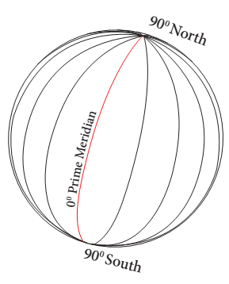
The lines of longitude that are found between the Prime Meridian and the 180Degree East line of longitude are called ‘Eastern Longitudes’ and the lines of longitude that are found between the Prime Meridian Within Bracket 0 Degree and the 180Degree West line of longitude are called ‘Western Longitudes’. Two opposite meridians form a great circle.
Box Item, Do you Know: The lines of longitude are found as semi circles covering 111 kilo meters at the Equator, 79 kilo meters at 45Degree latitude and no space between the lines at the poles.
Activity :
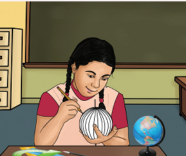
Take a ball and a thin iron wire. Pierce the ball with the wire from one end to the other end through the middle. Remove the wire. Draw circles around the points. Name the northernmost point as North Pole and the southernmost point as South Pole. The angle of a circle is 360Degree. Mark points on the circle at an interval of 15Degree using a protractor. Then draw lines joining these points on the top and bottom of the ball. The lines that you have drawn are lines of longitudes
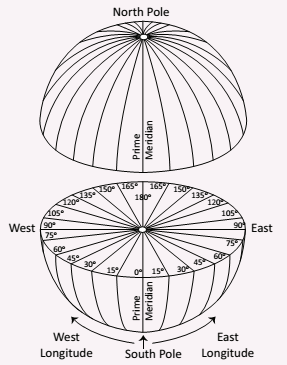
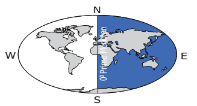
The part of the Earth between the 0Degree line of longitude and the 180Degree East line of longitude is known as the Eastern Hemisphere.
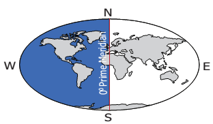
The part of the Earth from 0Degree line of longitude to 180Degree West line of longitude is called as Western Hemisphere.
Activity
Based on the longitudinal extent, in which hemisphere is our country located? Look at the globe and answer.
Greenwich Meridian
The Royal Astronomical Observatory is located at Greenwich near London in England. According to the International Meridian Conference held in 1884 in Washington District of Columbia in the Uninted States of America all nations
agreed on choosing the Greenwich Meridian as the international standard meridian With in Bracket 0Degree. This line of longitude is called the Prime Meridian and it is also known as the Greenwich Meridian because it passes through Greenwich.
The 180 degree line of longitude has been fixed as the International Date Line, drawn on the Pacific Ocean between Alaska and Russia through the Bering Strait. If a person crosses this line from the West to East, he loses a day. On the other hand, when he crosses from the East to West, he gains a day. Based on this, the date is fixed for different countries or regions of the world.
Box Item
Do you Know?
The International Date Line is not straight. If the line is drawn straight, two places in the same country would have different dates. So, the International Date Line is found zigzag in certain places to avoid confusion.
The imaginary lines of latitude and longitude form a grid-like pattern on the surface of the earth, known as the ‘Earth grid’ or ‘Geographic grid’.
To locate a place exactly on earth, the latitudinal and longitudinal extensions are required.
As many as 360 lines of longitude are drawn to connect the North and South Poles around the Earth 180 Degree on the Eastern Hemisphere and 180 Degree on the Western Hemisphere. Time is calculated on the basis of the lines of longitude.
Box Item
Do you Know?
Fact
The Earth takes one day to rotate on its axis.
1 day Equal to 24 hours
1 hour Equal to 60 minutes
24 hours Equal to 24 Multiply 60 Equal to 1440 minutes
The angle of the earth Equal to 360 Degree
360 Degree Equal to 360 Longitudes
360 Degree Equal to 1440 minutes
So 1 Degree Equal to 1440 divided by 360 Equal to 4 minutes
360 Equal to 4 minutes
In 4 minutes Equal to 1 Degree rotation
In 60 minutes Equal to 60 divided by 4 Equal to 15Degree rotation
So, in an hour With in Bracket 60 minutes the earth rotates 15 Degree
When the sun is overhead on a particular line of longitude, it is 12 noon at all the places located on that line of longitude. This is called local time.
The Sun is overhead on a line of longitude only once in a day. So the local time differs for every line of longitude. When the Sun is overhead the Greenwich Meridian at 12 noon, it is the local time of that place. The world time is calculated by this standard line of longitude.
It is known as the Greenwich Mean Time Within Bracket GMT.
For example, if the time is 12 noon at Greenwich Meridian, it is 12:04 Post Meridiem .at 1Degree East line of longitude and 11:56 Anti Meridiem. at 1 DegreeWest line of longitude. So, as one moves towards the east from any meridian the time increases. And if one moves towards the west from any meridian, time decreases.
Box Item
Do you Know?
1. The word meridian is derived from the Latin word ‘Meridianus’. It means mid day. Within Bracket Medius – Middle, dies – day. So, meridian means the position of the Sun found overhead at a place at noon.
2. A.m 'anti Meridiem' With in Bracket anti before Before Noon.
3. p.m. means 'post Meridiem' With in Bracket Post after or later After noon
Local time is calculated when the sun is overhead at noon. Many lines of longitude may pass through a country. Countries may or may not observe a common time. The standard time of a country or a part of it is calculated keeping a particular meridian as a standard one.
The meridians are selected in multiples of 15Degree or 7 Half Degree. It is done in such a way that the variation of standard time from Greenwich is expressed either as 1 hour or Half an hour.
The longitudinal extent of India is from 68 Degree 7 Minutes East to 97 Degree 25 Minutes East. As many as twenty nine lines of longitude pass through India. Having 29 standard time is not logical. Hence 82Half Degree E line of longitude is observed as the Prime Meridian to calculate the Indian Standard Time With in Bracket IST.
Box Item
Do you Know?
The 82 Half Degree E line of longitude passes through Mirzapur near Allahabad in Uttar Pradesh. This is located at an equal distance from Ghuar Mota in Gujarat and Kibithu in Arunachal Pradesh.
The world has 24 time zones. Some countries have a great longitudinal extent. So they have more than one standard time. Example: Russia has 7 time zones.
Activity:
1. What is the difference in time between the Greenwich Mean Time and Indian Standard Time?
2. If it is 5 Anti Meridiem. in New York City, United States of America. what would be the time at New Delhi, the capital of India?
3. If it is 12 Midnight at London, what would be the time in India?
4. The standard time of Sydney city in Australia is found to be at a difference of dash hours from that of the Greenwich Mean Time.
5. Mr. Senthamizh travels by flight from Chennai to London. He boarded the aeroplane at 9a.m After 12 hours of travel, at what time Within Bracket Greenwich Mean Time would he have reached London?
We saw about the lines of latitude and longitude drawn on the globe. Besides these, physical landforms, seas, oceans, countries etc., are also found on the globe
1.The imaginary lines drawn horizontally from the East to West on the globe and maps are called lines of latitude or parallels.
2. The imaginary lines drawn vertically from the North to South on the globe and maps are known as lines of longitude or meridians.
3. The 0 Degree line of latitude is called the Equator.
4. The 0 Degree line of longitude is called the Greenwich Meridian or thePrime Meridian.
5. The part of the Earth from the Equator with in Bracket 0 Degree to North Pole with in Bracket 90 Degree is called the Northern Hemisphere and from the Equator with in Bracket 0 Degreeto South Pole Within Bracket 90 Degree is called the Southern Hemisphere.
6. The part of the Earth from the Greenwich Meridian with in Bracket 0Degree to 180 Degree East line of longitude is called the Eastern Hemisphere and from Equator with in Bracket 0 Degree to 180 DegreeWest line of longitude is called the WesternHemisphere.
7. Lines of latitude are circles which are drawn at a distance of about 111 kilo meters. The poles are shown as points.
8. Lines of longitude are drawn as semi circles. The distance between the lines of longitude at the Equator is 111 kilo metres. It is found at a distance of 79 kilo metres at 45 Degree latitude and they converge at the poles.
9. Lines of latitude do not merge, while lines of longitude converge at the poles.
10. Time is calculated on the basis of the lines of longitude. The 180Degree line of longitude is the International Date Line.
1. Globe – A model of the earth
2. Lines of Latitude or Parallels – Imaginary lines drawn horizontally on the Earth from the East to West
3. Lines of Longitude or Meridians – Imaginary line drawn vertically on the Earth from the North to South
4. Geoid – The shape of the Earth
5. Hemisphere – Dividing the earth on the basis of 0° lines of latitude and longitude with regard to directions
6. Equator – The line of latitude drawn horizontally at the centre of the Earth
7. Tropic of Cancer – 23 and Half Degree North line of latitude
8. Tropic of Capricorn – 23 and Half Degree South line of latitude
9. Arctic Circle – 66 and Half Degree North line of latitude
10. Antarctic Circle – 66 andHalf Degree South line of latitude
1. Choose the correct answer
1. The shape of the Earth is dash
a) Square
b) Rectangle
c) Geoid
d) Circle
ANSWER: c) Geoid
2. The North Pole is
a) 90 Degree North Latitude
b) 90 Degree South latitude
c) 90 Degree West Longitude
d) 90 Degree East longitude
ANSWR: a) 90 Degree North Latitude
3. The area found between 0Degree and 180Degree East lines of longitude is called
a) Southern Hemisphere
b) Western Hemisphere
c) Northern Hemisphere
d) Eastern Hemisphere
ANSWER: d) Eastern Hemisphere
4. The 23 Half Degree North line of latitude is called dash
a) Tropic of Capricorn
b) Tropic of Cancer
c) Arctic Circle
d) Antarctic Circle
ANSWER: b) Tropic of Cancer
5. 180 Degree line of longitude is
a) Equator
b) International Date Line
c) Prime Meridian
d) North Pole
ANSWER: b) International Date Line
6. The Sun is found overhead the Greenwich Meridian at
a) 12 midnight
b) 12 noon
c) 1 post Meridiem
d) 11 Anti Meridiem.
ANSWER: b) 12 noon
7. A day has dash
a) 1240 minutes
b) 1340 minutes
c) 1440 minutes
d) 1140 minutes
ANSWER: c) 1440 minutes
8. Which of the following lines of longitude is considered for the Indian Standard Time?
a) 82 Half Degree East
b) 82 Half Degree West
c) 81Half Degree East
d) 81Half Degree West
ANSWER: a) 82 Half Degree East
9. The total number of lines of latitude are
a) 171
b) 161
c) 181
d) 191
ANSWER: c) 181
10. The total number of lines of longitudeare
a) 370
b) 380
c) 360
d) 390
ANSWER: c) 360
2. Fill in the blanks
1. The line of latitude which is known as the Great Circle is dash. ANSWER: International date line.
2. The imaginary lines drawn horizontally on Earth from the West to East are called dash
Answer: Prime Meridian
3. The 90 Degree lines of latitude on the Earth are called dash. Answer: Time zone.
4. The Prime Meridian is also called dash. Answer: Royal Astronomical Observatory
5. The world is divided into dash time zones. Answer: 24 time zones.
3. Circle the odd one.
1. North Pole, South Pole, Equator, International Date Line. Answer: International Date Line
2. Tropic of Capricorn, Tropic of Cancer, Equator, Prime Meridian. Answer: Prime Meridian
3. Torrid Zone, Time Zone, Temperate Zone, Frigid Zone. Answer: Time Zone,
4. Royal Astronomical observatory, Prime Meridian, Greenwich Meridian, International Date Line.
Answer: Royal Astronomical observatory
5. 10 Degree North, 20 Degree South, 30 Degree North, 40 Degree West.
Answer:40Degree West
4. Match the following
A |
B |
0 degree line of latitude |
Pole |
0 degree line of longitude |
International Date Line |
180 degree line of longitude |
Greenwich |
90 degree line of latitude |
Equator |
Answer:
A |
B |
0 degree line of latitude |
Equator |
0 degree line of longitude |
Greenwich |
180 degree line of longitude |
International Date Line |
90 degree line of latitude |
Pole |
5. Examine the following statements
1. The Earth is spherical in shape.
2. The shape of the Earth is called a geoid.
3. The Earth is flat.
Look at the options given below and choose the correct answer
a) 1 and 3 are correct
b) 2 and 3 are correct
c) 1 and 2 are correct
d) 1,2 and 3 are correct
answer c) 1 and 2 are correct
6. Examine the following statements
Statement 1 : The lines of latitude on Earth are used to find the location of a place and define the heat zones on Earth.
Statement 2 : The lines of longitudes on Earth are used to find the location of a place and to calculate time.
Choose the correct option
a) Statement 1 is correct 2 is wrong
b) Statement 1 is wrong 2 correct
c) Both the statements are correct
d) Both the statements are wrong
answer: a) Statement 1 is correct 2 is wrong
7. Name the following
1. The imaginary lines drawn horizontally on Earth. Answer: Line of latitudes.
2. The imaginary lines drawn vertically on Earth. Answer: Line of Longitude.
3. The three-dimensional model of the Earth. Answer: Globe
4. India is located in this hemisphere based on lines of longitude. Answer: Southern Hemisphere.
5. The network of lines of latitude and longitude. Answer: Earth Grid.
8. Answer briefly
1. What is a Geoid?
2. What is local time?
3. How many times would the sun pass overhead a line of longitude?
4. What are lines of latitude and longitude?
5. Name the four hemispheres of the Earth.
9. Give reasons
1. The 0° line of longitude is called the Greenwich Meridian.
2. The regions on Earth between North & South lines of latitude Within Bracket 66 Half Degree and
poles Within Bracket 90 Degree is called Frigid Zone
3. The International Date Line runs zigzag.
10. Answer in detail
1. What are the uses of the globe?
2. How are the hemispheres divided on the basis of lines of latitude and longitude? Explain with diagrams.
3. What are the significant lines of latitude? Explain the zones found between them.
4. Explain: Indian Standard Time.
11. Activity
There are five positions marked on the grid given below. Look at them carefully and fill the blanks with reference to the lines of latitude and longitude. The first one is done for you.
ANSWER: 40 Degree North 30 Degree West
ANSWER: 20 Degree North 10 Degree West
ANSWER: 10 Degree North 20 Degree East
ANSWER: 40 Degree South 50 Degree East
ANSWER: 20 Degree South 20 Degree West
Reference
1. Goh Cheng Leong, Certificate Physical and Human Geography With in Bracket 2009, Oxford University Press, New Delhi, India.
2. A Dictionary of Geography – Susan Mayhew, Oxford University Press, Fifth edition -2015.
3. அறிவியல்களஞ்சியம்With in Bracket தொகுதிகள் ,தஞ்சை தமிழ் பல்கலைக்கழகம் வெளியீடு.
4. The earth shape and gravity With in Bracket 1965 Oxford Degman Press.
5. Strahler, Physical Geopraphy Fourth Edition with in Bracket 1965 New York MC Graw – Hill BookCo
I C T CORNER
Globe
Through this activity you will know about the globe model.
Steps:
Step 1 Use the URL or scan the QR code to open the activity page.
Step 2 Click the red “hot spot” area to see the main landmarks of the globe.
Step 3 In the view box Click the “Core” option to view the Earth's inner layers.
Step 4 Drag and rotate the Globe you can rotate the Globe.
Browse in the link Web:
https://solarsystem.nasa.gov/planets/earth/overview/
(or) scan the QR Code
To understand the meaning of disaster.
To know about the types of disasters.
To know a few key concepts in Disaster Management and orientthem to the words used in the media.
To understand Tsunami and flood.
To understand about Forecasting, Emergency Operation Centre etc.,
This lesson explains about the various natural disasters and man-made disasters. It also deals with the precautionary and mitigation measures taken to avoid the loss of lives and materials.
Disaster is a very common phenomenon in human society. It has been experienced by people since time immemorial. Though its form may be varied, it has been a challenge for society. The latest development which has been discovered in the World Disaster Reports recently is that the disasters have increased in frequency and intensity. India is one of the most disaster-prone countries in the world. It has some of the world’s most severe droughts, famines, cyclones, earthquakes, chemical disasters, rail accidents and road accidents. The high density of population in the developing countries, especially in the high-risk coastal areas, results in millions of people getting affected by natural disasters, especially in recurring disasters like floods, cyclones, storm surges, etc
‘A disaster is a serious of the functioning of a society involving human and material loss. Disaster is broadly classified into natural and manmade disasters.
Disasters |
|
Natural Disasters |
Man Made Disasters |
Natural DisasterEarthquakes |
Man Made Disaster Fire |
Natural Disaster Volcanoes |
Man Made Disaster Destruction of buildings |
Natural Disaster Tsunamis |
Man Made Disaster Accidents in Industries |
Natural Disaster Cyclones |
Man Made Disaster Accidents in transport |
Natural Disaster Floods |
Man Made Disaster Terrorism |
Natural Disaster Landslides |
Man Made Disaster stampede |
Natural Disaster Avalanches |
|
Natural Disaster Thunder and Lightning |
|
The sudden shaking of the earth at a place for a short spell of time is called an earthquake. The duration of the earthquake may be a few seconds to some minutes. The point where an earthquake originates is called its ‘focus’. The vertical point at the surface from the focus is called ‘epicentre’.
Volcanoes are openings or vents where lava, small rocks and steam erupt onto the earth’s surface.
Tsunami are waves generated by earthquake, volcanic eruptions and underwater landslides.
A low-pressure area which is encircled by high-pressure wind is called a cyclone.
An overflow of a large amount of water, beyond its normal limits, especially on the rainfed areas is called a flood.
The movement of a mass of rocks, debris, soil etc. Downslope is called a landslide.
A large amount of ice, snow and rock falling quickly down the side of a mountain is called an Avalanche.
Thunder is a series of sudden electrical discharge resulting from atmospheric conditions. This discharge results in sudden flashes of light and trembling sound waves which are commonly known as thunder and lightning.
Massive forest fires may start in hot and dry weather as a result of lightning, and human carelessness or from other causal factors.
Demolition of buildings by human activities.
Chemical, biological accidents that occur due to human error. With in Bracket Example Bhopal gas tragedy
Violation of road rules, carelessness causes accidents.
The social unrest or differences in principles leads to terrorism.
The term stampede is a sudden rush of a crowd of people, usually resulting in injuries and death from suffocation and trampling.
A killer Tsunami hit the southeast Asian countries on the 26th of December, 2004. A massive earthquake with a magnitude of From 9.1 to 9.3 in the Richter scale in the Indonesian island of Sumatra. It triggered one of the biggest Tsunamis the world had ever witnessed. The massive waves measuring up to 30 metres that killed more than 2,00,000 With in Bracket 2 LAKHS people in Asia. In India, over 10,000 people were killed by this disaster. Tamil Nadu alone accounted for 1,705 deaths.
All the coastal districts were affected, Nagapattinam was the worst hit in the state of Tamil Nadu. Fishermen, tourists, morning walkers, children playing on the beach and people living on the coast were unprepared for the waves. So they lost their life and most of the loss of lives and damage to property was within 500 metres of the shore. After that the Indian government set up a Tsunami Early Warning System at Indian National Centre for Ocean Information Services With in Bracket I N C O I S, Hyderabad in 2007.
You should find out if your home, school etc., are in vulnerable areas along the seashore.
Know the height of your street above sea level.
Plan evacuation routes and practise your evacuation routes.
Discuss tsunamis with your family. Review safety and preparedness measures with your family.
If you see the sea water receding, you must immediately leave the beach and go to higher ground far away from the beach.
Don't go to the coast to watch the Tsunami.
Don't try to surf the tsunami waves.
Be aware of facts about tsunamis.
Floods are high stream flows, which overlap natural or artificial banks of a river or a stream and are markedly higher than the usual flow as well as inundation of low land.
Flash floods: Such floods that occur within six hours during heavy rainfall.
River floods: Such floods are caused by Precipitation over large catchment areas or by melting of snow or sometimes both.
Coastal floods: Sometimes floods are associated with cyclone high tides and tsunami.
Torrential Rainfall.
Encroachment of rivers bank.
Excessive rainfall in catchment.
Inefficient engineering design in the construction of embankments, dams and canals.
Destruction of drainage system
Water pollution
Soil erosion
Stagnation of water
Loss of agricultural land and cattle
Loss of life and spread of contagious diseases.
To find out if the settlement area is to be affected by flood or not.
Keeping radio, torch, and additional batteries, storing drinking water, dry foods items, salt and sugar. Safeguarding materials like kerosene, candle, match box,clothes and valuable things.
Keeping umbrella and bamboo poles.
Keeping a first aid box and strong ropes to bind things.
To dig canals from the farmland, to drain the excessive water keeping sand bags etc.,
Try to connect electricity once it is cut.
Operate vehicles
Swim against floods
Avoid going on excursions.
Neglect flood warning messages
Cut off gas connection and electricity.
Keep sandbags on drainage holes and bathroom holes.
Leave immediately through the known passage or prescribed passage
Drink hot water.
Use bleaching powder to keep your environment hygienic.
Before using match sticks and candles, ensure that there is no gas leakage.
Don’t eat more food when you are affected by diarrhoea.
Don’t try to take anything that floats in flood.
Disaster Risk Reduction: The practice of reducing disaster risks through systematic efforts to analyse and manage the causal factors of disasters. There are four key approaches to public awareness for disaster risk reduction. Campaigns, participatory learning, informal education, and formal school based interventions.
Box Item, Case Study:
Chennai Flood2015
Chennai is one of the largest metropolitan cities in India, which lies on the south eastern coast. The north east monsoon along with tropical cyclones hits Chennai every year and gives heavy cyclonic rainfall. In 2015, November and December due to heavy rain, the devastating floods that hit Chennai and other parts of Tamil Nadu claimed more than 400 lives and caused enormous economic damage. The Government of India and Tamil Nadu have taken a lot of action to reduce loss of life and minimize human sufferings.
Weather forecasting, Tsunami early warning system, cyclonic forecasting and warning provide necessary information which help in reducing risks during disasters.
School Disaster Management Committee, Village Disaster Management Committee, State and Central government institutions take mitigation measures together during disaster. Newspaper, Radio, Television and social media bring updated information and give alerts on the vulnerable area, risk, preparatory measures and relief measures including medicine.
Mitigation: The lessening of the adverse impacts of hazards and related disasters.
Forecast: Definite statement or statistical estimate of the likely occurrence of a future event or conditions for a specific area.
Magnitude: A measure of the amount of energy released by an earthquake.
Contagious: Transmissible by direct or indirect contact.
Catchment: The action of collecting water, especially the collection of rainfall over a natural drainage area.
1 Answer in brief
1. Define Disaster
2. What are the two types of disasters? Give examples.
3. Write a short note on ‘Thunder and lightning’
4. Chennai, Cuddalore and Cauvery delta are frequently affected by floods. Give reason.
5. Differentiate: Landslide – Avalanche
2.Answer in a paragraph
1. What is flood? Explain the do’s and don’ts during floods.
3 . Activity
Make a flood plan
On a piece of paper, draw your village or town map roughly. Locate your home, school and playground on the map. Then draw the rivers or stream or lake and road, located nearest to your village or town. Answer the questions listed below.
1. Which areas and roads would be mostly affected by flood?
2. Can you find an evacuation route?
3. If you live in a flood-prone area, what are the precautionary measures you have to take during heavy rains?
4. What are things that you should have in your ‘Go- Kit’ or ‘Drive -away kit’?
5. Make a list of emergency numbers. With in Bracket ‘Go-Kit’ - A kit prepared by and for an individual or group who expects to develop it in alternative locations during emergency
ICT CORNER
Understanding Disaster
Through this activity you will know about prevention activities before cyclone through a game.
Steps:
Step 1 Use the URL or scan the QR code to open the “storm safe” game page.
Step2 Click the “play” icon to enter the game page
Step 3 Click the “continue” button start the game.
Step 4 Drag and put weightless things in the house
Browse in the link Web: http://www.vicses.com.au/stormsafe-game/
With in Bracket or scan the Quick Response Code
To know the meaning of democracy
To know the types of democracy
To know and appreciate the structure of our constitution
To know the aims of democracy
குடிதழீஇக் கோலோச்சும் மாநில மன்னன்
அடிதழீஇ நிற்கும் உலகு'
The world will constantly embrace the feet of the great king who rules over his subjects with love.
The teachers of Nallur Government High School were doing the final preparations for the programme ‘Let’s know the society’ a monthly event. The Singaravelar Hall was filled with students. The Headmaster Mr. Jeeva welcomed the Chief Guest of the day, Advocate Mr. Rajasekaran. When he brought the chief guest to the hall, the students observed silence.
Mr. Britto, the history teacher, welcomed the gathering. The chief guest, Mr. Rajasekaran stood up to address the students.
“Beloved brothers and sisters! I thank you for inviting me to this programme. I’m not going to speak on this occasion.” When he said this and paused, everyone looked at him in wonder.
“Democracy should be found everywhere, shouldn’t it? So I am going to converse with all of you,” he said. He requested to give a microphone to the students. Mr. Rajasekar said, “First let me ask you a question. Do you know what kind of society the early man lived in?”
“In the beginning, they were hunters and gathered food. Later, they settled near rivers and practised agriculture,” said Deepika, a sixth standard student.
“Yes, when man started to live in groups, tribes were formed. Every tribe had its own chief. These groups fought among themselves for land, water and other resources. Those who emerged victorious, formed kingdoms by uniting the other tribal groups. These kingdoms later integrated to form empires.”
Arun questioned, “So the chief would have become the king, wouldn’t he?”
“Yes, that was how monarchies ruled by kings were formed.”
Suganya asked, “Was this how monarchy emerged in our country too?"
“Yes, this was how the system of monarchy formed throughout the world. Also, our country was ruled by kings and emperors and then came under the British rule.”
The students answered together, “After centuries of struggle and many sacrifices, we got freedom from British colonialism.”
“We adopted democracy as our ruling system when our country got freedom,” said Rajasekaran.
Devarajan asked him, “What is democracy?”
“When you start a Sports Club, you’ll share the responsibilities. Then you would enjoy its benefits, but share the income and expenditure, wouldn’t you?”
“Yes sir”
“Similarly, the citizens of a country select their representatives through elections. Thus, they take part in the direct governance of a country. This is termed Democracy. In a democratic form of government, a considerable amount of power lies with the people of that nation. People can participate in the politics of the country and decision-making processes. There are different types of democracy.”
Box Item
Do You Know?
Democracy is ‘Government of the people and by the people and for the people’ – Abraham Lincoln.
“Types of democracy!”
“Yes, there are various types of democracy in practice around the world. Among those, direct democracy and representative democracy are the most popular forms of government.”
Box Item
Do You Know?
The birthplace of democracy is Greece. Democracy is a term derived from two the Greek words "Demos" and cratia". 'Demos' means the people and 'Cratia' means the power or rule.
“What is Direct Democracy?” asked Sirajudeen.
“In a Direct Democracy, people have the power to frame laws. If we consider your Sports Club as an example, you all can discussand amend laws and rules. The perspective of each member is considered and each one expresses his view. But how will you take a final decision?”
Box Item
Do You Know?
In a Direct Democracy, only the citizens can make laws. All changes have to be approved by the citizens. The politicians only rule over parliamentary procedure. Switzerland has had a long history of a successful direct democracy
Higher Order Thinking: Is it possible to practise Direct Democracy in India?
“The choice of the majority will be accepted. The others will also give their consent,” said Selva.
“Yes, this system is actually known as Direct Democracy,” said Rajasekaran.
What do you mean by representative democracy?
“Imagine that your Sports Club has more members now. Is it possible for hundreds of them to gather and discuss various decisions?”
“No sir”
“In that case, all the members should be represented by a group of representatives, shouldn’t they?”
“Yes,” agreed the students in union.
Democracy is divided in to two |
1. Direct Democracy, example Switzerland2. Representative Democracy, example India, United States of America, England |
In the first 1, The People gives Votes it leads to Laws and rules it leads to Direct Democracy. |
In the second .The People gives Votes it leads to Elected Representatives it leads to Laws and rules it leads to Representative Democracy |
“Those group members will administrate the sports club on behalf of all the other members. To select these representatives, elections are held. For example, many contest for the post of the Head, Secretary, Treasurer and members of the administration group.
In the end, those who gain the maximum number of votes will be given the posts. On behalf of the other members, they obtain the power to take decisions in a democratic manner. This is termed as Representative Democracy.”
Representative Democracy |
|
Parliamentary Democracy India England |
Presidential DemocracyUnited States of America Canada |
“What is meant by democratic decision making?” questioned Judith.
“In the system of democracy, the power to take decisions does not lie with the Head. On the contrary, a group holds the power, but adheres to the rules and regulations. All the members of the group hold open discussions and take final decisions only when everyoneis convinced. This is called democratic way of decision making.”
“Are there rules and regulations to govern our country like the rules and regulations of this group?”
“Yes. In a highly populated country like India, if people want to live peacefully, they have to follow certain rules and regulations, rights and duties properly. Hence, the constitution of India guides us in all these aspects and plays an important role in maintaining law and order.”
Box Item
Do You Know?
In 2007, the Uninted Nations Orgaization General Assembly resolved to observe 15th September as the International Day of Democracy.
“What are the rights given in our Constitution?”
“Our Constitution ensures freedom, equality and justice to everyone.”
“What other features are found in our constitution?”
“It defines the political principles, the structure of the government institutions and methods to follow these rules and regulations, the powers and responsibilities. And also, it fixes the Rights and Duties and the Directive Principles of the citizens. Thus our constitution provides a structure to us.”
“Is the constitution of India such a detailed one?” asked Tamizhselvi in amazement.
“Indian Constitution is the longest written constitution in the world. It is drafted by the Drafting Committee of the Constituent Assembly headed by Dr. B.R. Ambedkar. That is why we call him the ‘Chief Architect of our Constitution’ Rajasekaran concluded.
The students clapped with joy and thanked him for the simple explanation of democracy.
Democracy is defined as “Government of the people,and by the peopleand for the people.”
In a democracy, the power is vested in the hands of the people. For that, the people should have the right to take decisions. Everyone cannot participate in decision making. So, the representative government elected by the people to form a democratic system, all those who attain the age of 18 are given the voting rights to elect the representatives. At the same time, the representatives have the responsibility to protect the welfare of the people.
New Zealand is the first country to allow women to vote With in Bracket 1893. Voting rights to women were given in 1918 and 1920 in the United Kingdom and United States of America respectively. At the same time, the wealthy alone were given the voting rights in India. Many leaders like Mahatma Gandhi kept insisting on giving voting rights to all. Now in India, all the people above 18 years of age enjoy Universal Adult Franchise.
Box Item
Do You Know?
The world statistical data on democracy declares that 79 percent of the Indian citizens have faith in the democratic system. Hence, India ranks first among the democratic countries of the world.
Oldest Democracies in the World |
||||
Serial Number |
Democracy |
Period |
Location |
Significance |
Serial Number 1 |
Greek Democracy |
Period: 5th century BC With in Bracket BCE |
Location: Greece |
Significance: Foundation of political philosophy |
Serial Number 2 |
Roman Empires Democracy |
Period: 300 BC to 50BC With in Bracket BCE |
Location: Italian Peninsula, Rome |
Significance: Loads of expansions of the growth of civilization |
Serial Number 3 |
San Merinos Democracy |
Period: Anno Domini With in Bracket Common Era 301 |
Location: Italy |
Significance: Earliest written constitution still in effect |
Serial Number 4 |
The Iceland Democracy |
Period: Anno Domini With in Bracket Common Era 930 |
Location: Thingvellir |
Significance: The oldest and longest functioning parliament in the world. |
Serial Number 5 |
The Isle of Man’s Democracy |
Period: Anno Domini With in Bracket Common Era 927 |
Location: Between Great Britain and Ireland |
Significance: Self Governing possessions of the crown |
Serial Number 6 |
British Democracy |
Period: 13th Century Anno Domini With in Bracket Common Era |
Location: England |
Significance: Magna Carta of 1215 |
Serial Number 7 |
US Democracy |
Period: Anno Domini With in Bracket Common Era 1789 |
Location: United States of America |
Significance: The oldest standing democracy |
1. Democracy -a government formed by the people
2. Election -a process by which a representative is chosen
3. Decision -to make up one’s mind
4. Government -a group of people with a authority to govern a country.
"Government of the people, by the people for the people" is defined as democracy.
Direct democracy and Representative democracy are the types of democracy.
Our constitution ensures freedom, equality and justice to everyone.
Indian constitution is the longest written constitution in the world.
In India, all the people above 18 years of age enjoy Universal Adult Franchise.
1. Choose the correct ANSWER:
1.Early man settled near dash and practiced agriculture.
a) plains
b) bank of rivers
c) mountains
d) hills
ANSWER: b). bank of rivers.
2.The birthplace of democracy is dash
a) China
b. America
c) Greece
d) Rome
ANSWER: c) Greece
3.dash is celebrated as the International Democracy Day.
a) September 15
b) October 15
c) November 15
d) December 15
ANSWER: a) September 15
4.Who has the right to work in a direct Democracy?
a) Men
b) Women
c) Representatives
d) All eligible voters
ANSWER: d) All eligible voters
2. Fill in the blanks
1. Direct Democracy is practised in dash
ANSWER: Switzerland
2. The definition of democracy is defined by dash. ANSWER: Abraham Lincoln
3. People choose their representatives by giving their dash. ANSWER: votes
4. In our country dash democracy is in practice. ANSWER: parliamentary
3. Answer the following
1. What is Democracy?
2. What are the types of democracy?
3. Define: Direct Democracy.
4. Define: Representative Democracy.
5. What are the salient features of our constitution that you have understood?
4 Higher Order Thinking
1. Compare and contrast direct democracy
and representative democracy.
5. Activities
1. Find out your area's representative’s names and write down
a) Member of Parliament b) Member of Legislative Assembly c) Local body member
2. Discuss about the merits and demerits of democracy.
I C T CORNER
Democracy
Through this activity you will know about structure of government of India and political systems
Steps:
Step 1 Use the URL or scan the QR code to open the activity page.
Step 2 Click the “political system” to know government of India.
Step 3 Click the “english” button the map will appear.
Step 4 choose and click tamilnadu to know about the state government
Browse in the link
Web: http://www.elections.in/With in Bracket or scan the Quick Response Code
To know about the structure and functions of rural and urban local bodies.
To know about the Grama Sabha and the purpose of the Grama Sabha meeting.
To understand the special features of Panchayat raj.
To know about the participation of women in local bodies.
To know about the election of the local body and will observe the forthcoming election.
Nandhini is in standard 6. It was her custom to read the headlines in the newspaper loudly to her parents Mr. Namburajan and Mrs. Manimegalai. They would clear her doubts. Sometimes, children from their neighbourhood would also join her and each one will read an article loudly. As it was a Saturday, Johnson, Maran and Anwar were also in Nandhini’s house. Nandhini started to read an article from the newspaper.
“Avadi has been declared as a corporation” She was about to read the next heading, but she had a doubt and asked her father.
“Father, what is a corporation?”
“The Government of Tamil Nadu will declare certain municipalities based on above Ten lakhs population and high revenue. That’s how Avadi has been declared as a corporation too”, said her father Namburajan.
“Oh, if that is so, are there other corporations that exist already?”
“Yes, there are 21 corporations in Tamil Nadu, said Namburajan.
The List of corporations in Tamil Nadu
1. Chennai
2. Madurai
3. Coimbatore
4. Tiruchirapalli
5. Salem
6. Tirunelveli
7. Erode
8. Thoothukudi
9. Tiruppur
10. Vellore
11. Dindigul
12. Thanjavur
13. Nagercoil
14. Hosur
15. Avadi
16. Kancheepuram
17. Karur
18. Cuddalore
19. Sivakasi
20. Thambaram
21. Kumbakonam
Box Item
Do You Know?
The Chennai Corporation which was founded in 1688 is the oldest local body in India.
“Father, what about the place we live in” enquired Maran.
“We live in a Panchayat, Maran”.
“What is a Panchayat?”
“There are villages as well as cities in Tamil Nadu, aren’t there?”
“Yes, father”.
“Won’t the needs of villages and cities differ? Our constitution has provided certain structures to fulfil the needs of the people.
Accordingly, the urban local bodies are categorized into City Municipal Corporations, Municipalities and Town Panchayats, while the rural local bodies are categorised into Village Panchayats, Panchayat Unions and District Panchayats. These are together known as local bodies.”
“Oh, are there so many divisions?” “Yes, I’ll tell you about them. Didn’t I tell you about the City Municipal Corporations?”
“Yes, father”.
“Those areas which have a population of more than one lakh and a high amount of revenue and are found in the level below the City Municipal Corporation are called a Municipality.
Box Item
Do You Know?
Walajahpet Municipality is the first Municipality in Tamil Nadu.
“You mentioned something about towns”.
“A Town Panchayat has about 10,000 population. A Town Panchayat is between a village and a city.
There is something special about the Town Panchayat. Can anyone tell me what is it?”, asked Namburajan. Everyone was gazing at him. But none answered.
“Well, I’ll tell the answer myself.
Tamil Nadu was the first state to introduce a town Panchayat in the whole of India”.
All were amazed on hearing it.
A City Municipal Corporation has a Commissioner, who is an Indian Administrative Service with in Bracket Indian Administrative Service officer.
Government officials are deputed as Commissioners for the municipalities. The administrative officer of a Municipality is an Executive Officer With in Bracket E O
“You mentioned about Panchayats and Panchayat Unions”.
The Village Panchayats are the local bodies of villages. They act as a link between the people and the government. Villages are divided into wards based on their population. The representatives are elected by the people.
The Elected Representatives:
1. Panchayat President
2. Ward members
3. Councillor
4. District Panchayat Ward Councillor.
Many village Panchayats join to form a Panchayat Union. A Councillor is elected from each Panchayat, isn’t it? Those councillors will elect a Panchayat Union Chairperson among themselves. A Vice Chairperson is also elected. A Block Development Officer with in Bracket B D O is the administrative head of a Panchayat Union.
The services are provided on the Panchayat Union level.
Box Item
Do You Know?
The Nilgiris and Perambalur Districts have the lowest number of Panchayat Unions with in Bracket 4 District Panchayat
A District Panchayat is formed in every district. A district is divided into wards on the basis of 50,000 population. The ward members are elected by the Village Panchayats. The members of the District Panchayat elect the District Panchayat Committee Chairperson. They provide essential services and facilities to the rural population and the planning and execution of development programmes for the district.
The local bodies are governed by the representatives elected by the people. The constituencies are called wards. People elect their ward members.
The Mayor of the City Municipal Corporation and the Municipal Chairperson are the elected representatives of the people. The people elect them. The Corporation Deputy Mayor and the Municipal Vice Chairperson are elected by the ward councillors” finished Namburajan.
“What are the benefits of local bodies, uncle?”
“There are many benefits. The services provided can be divided as obligatory functions and discretionary functions. These are provided by the local bodies.
Water supply
Street lighting
Cleaning roads
Drainage & sewage pipes system
Laying down roads
Activation of Central and State Government schemes
parks
Libraries
Playgrounds, etcetera.
Drinking water supply
Street Lighting
Maintenance of Clean Environment
Primary Health Facilities
Laying of Roads
Building flyovers
Space for markets
Drainage System
Solid waste management
Corporation schools
Parks
Play grounds
Birth and Death registration, etcetera.
“So, who does all this work?”
“As per the decisions taken in the Council meetings, the commissioner or officers assign these works to their subordinate officers or other servants. Thus, they all work at various levels to get these public works done”.
“Will the Government provide funds for these services, father?”
“The Government directly allots funds
for these works. The local bodies also collect revenue”.
House tax
Professional tax
Tax on shops
Water charges
Specific fees for property tax
Specific fees for transfer of immovable property
Funds from Central and State Governments, etcetera.
House Tax
Water Tax
Tax on shopping complexes
Professional Tax
Entertainment Tax
Vehicle Charges
Funds by Central and State Government, etcetera.
Activity
“How are the Grama Sabha meetings held, uncle?” asked Maran. “Grama Sabha meetings? In movies, I have seen elders sitting under trees and discussing important matters and making decisions,” said Johnson.
“No, no, both are different. A Grama Sabha is formed in every Village Panchayat. It is the only permanent unit in the Panchayat Raj System. Grama Sabha meetings are held even in smaller villages. The Grama Sabha is the grass root level democratic institution in a Village Panchayat”.
Those who have attained the age of 18 years and whose names are found in the electoral roll of the same Panchayat can take part in a Grama Sabha meeting. The Grama Sabha meetings are conducted four times a year. Officers like the District Collector, the Block Development Officer, Panchayat President, Vice President, and Ward Members etcetera also participate in this meeting. The people can freely express their needs and grievances”.
When are these meetings convened?
January 26, May 1, August 15 and October 2.
Apart from these days, the meetings can be convened as per need or during emergency.
These are called Special Grama Sabha meetings.
Activity
The teacher guides the student to visit the Grama Sabha meeting.
“Mahatma Gandhi advocated Panchayat Raj as the foundation of India’s political system, as a form of government, where each village would be responsible for its own affairs. The Panchayat Raj Act was enacted on April 24, 1992”.
Box Item
Do You Know?
April 24 is National Panchayat Raj Day
Grama Sabha
Three tier local body governance
Reservations
Panchayat Elections
Tenure
Finance Commission
Account and Audit, etcetera.
“Thank you very much, uncle. We really learnt a lot about local bodies”, said the children gratefully.
“I’m very happy that I could share so much with you today. That’s enough of reading newspapers. Go out and play now”,said Namburajan.
The children ran out to play joyously.
Box Item
Activity
The Central Government gives awards to the best performing Village Panchayats. Find out if your village has received such awards.
All local bodies have a reservation of 33 percent for women. In the 2011 Local Bodies election, 38 percent seats were won by women. As per the Tamil Nadu Panchayats With in Bracket AmendmentAct, 2016, percent reservation for women is being fixed in Panchayat Raj institutions
Box Item
Activity
Find out about the ward members of your area. Talk to the women members and discuss their participation and experiences.
The tenure for the representatives of local self-Government is 5 years. The election to the Local Bodies is held once in five years by the State Election Commission. Every state has a State Election Commission. The Tamil Nadu State Election Commission is situated in Koyambedu, Chennai.
Local Bodies of Tamil Nadu Within Bracket At present
Village Panchayats 12,525
Panchayat Unions 388
District Panchayats 36
Town Panchayats 490
Municipalities 138
Municipal Corporations 21
Source Tamilnadan state election commission. www.tnsec.tn.nic.in
Box Item,
Think it over
Do you think the above numbers are stable? Find out about the recent changes.
What is the number of votes cast by rural and urban voters in a local body election?
Works carried out by local bodies during natural disasters and outbreak of diseases.
Town Panchayat பேரூராட்சி
Municipality நகராட்சி
Corporation மாநகராட்சி
Village Panchayat கிராம ஊராட்சி
Panchayat Union ஊராட்சி ஒன்றியம்
District Panchayat மாவட்ட ஊராட்சி
Local bodies are structures to fulfil the needs of people.
Panchayat, Panchayat Union and District Panchayat are rural local bodies.
Town Panchayat, Municipality and Corporation are urban local bodies.
Grama Sabha is the only permanent unit in a village Panchayat.
Panchayat Raj System strengthened the local bodies.
The election of local bodies takes place every five years.
1. Choose the correct answer
1. dash is set up with several village panchayats
a) Panchayat Union
b) District Panchayat
c) Taluk
d) Revenue village
ANSWER: a) Panchayat Union
2. dash is National Panchayat Raj Day.
a) January 24
b) July 24
c) November 24
d) April 24
ANSWER: d) April 24
3. The oldest urban local body in India is dash
a) Delhi
b) Chennai
c) Kolkata
d) Mumbai
ANSWER: b) Chennai
4. The head of a corporation is called a dash.
a) Mayor
b) Commissioner
c) Chairperson
d) President
ANSWER: a) Mayor
2. Fill in the blanks
1. dash is the first state in India to introduce a town Panchayat. ANSWER: TAMILNADU
2. The Panchayat Raj Act was enacted in the year dash. ANSWER: 1992
3. The tenure of the local body representative is dash years. ANSWER: 5
4. dash is the first municipality in Tamil Nadu. ANSWER: WALAJHAPET MUNICIPALITY.
3. Match
Grama Sabha - Executive Officer
Panchayat Union - State Election Commission
Town Panchayat - Block Development Officer
Local body election - Permanent Unit
3 Match
ANSWER
Grama Sabha - Permanent Unit
Panchayat Union - Block Development Officer
Town Panchayat - Executive Officer
Local body - election State Election Commission
4. Answer the following
1. Is there any corporation in your district? Name it.
2. What is the need for local bodies?
3. What are the divisions of a rural local body?
4. What are the divisions of an Urban local body?
5. Who are the representatives elected in a Village Panchayat?
6. List out a few functions of corporations.
7. List out a few means of revenue of village Panchayats.
8. When are Grama Sabha meetings convened? What is special on those days?
9. What are the special features of the Panchayat Raj system?
10. What is the importance of Grama Sabha?
5. Higher Order Thinking
1.Local bodies play an important role in the development of villages and cities. How?
6. Activities
1. Prepare a questionnaire to interview a local body representative.
2. Discuss; If there is a contribution to the improvement of your school by local body representatives
3. If I were a local body representative, I would
4. Find out the number of local bodies in your district and list them.
Name of the District |
Village Panchayat |
Panchayat Union |
District Panchayat |
Town Panchayat |
Municipality |
Corporation |
|
|
|
|
|
|
|
I C T CORNER
Local body
Through this activity you will know about the local body structure of India.
Steps:
Step 1: Use the URL or scan the QR code to open the activity page.
Step 2: Click the “panchayat Raj” to know about panchayat rules and acts.
Step 3: Click the “Scheme” to know about state and central schemes of
panchayat raj.
Step 4: Click the “map” option to know how many panchayat raj in Tamil Nadu.
Browse in the link Web: https://www.tnrd.gov.in/index.html
With in Bracket or scan the QR Code
To understand the importance of road safety.
To know about the road rules and traffic signals.
To learn about the road safety measures and strategies and ensure the safety of lives.
Caution and care, make accidents rare’ Traffic rules are the laws that govern how, when and why you are allowed to drive any vehicle. The traffic safety course education plays an important role in shaping the attitude and behaviour of children and young people ensuring to become responsible drivers, passengers, pedestrians and cyclists. Keeping the children safe at all times can be tricky when you cannot be with them always. Parents and teachers ensure the safety of the children at home and school. But who keeps them safe on the road? Therefore educating children about road safety is very important. Teaching about road safety to children can be started as soon as they are old enough to step out of the home.
Blue circles give positive instructions about what is to be done. |
|
Red rings or circles give negative instructions. What should not be done.
|
What do the three colours red, amber and green signify?
RED means STOP
Wait behind the stop line.
If there are no lines, stop before the traffic light at the intersection so that traffic light is clearly visible.
Wait until a green signal appears before proceeding.
You may turn left while the signal is red, if it is not prohibited by a sign.
But give importance to pedestrians and other traffic.
AMBER means CAUTION
You may move on if the amber appears after you have already crossed the stop line or when you feel that your stopping may cause an accident. Anyhow be extra careful.
GREEN means GO
Proceed ahead ensuring that the way is clear.
You can make a right or left turn if not prohibited by signs, but take
special care and give way to pedestrians crossing the road.
GREEN ARROW
Means that you can go in the direction shown by the arrow.
Children have a tendency just to sprint across the street, as they like. Educate the children to never run across or along the road. Children can get distracted easily and leave their parent’s hands to run or sprint away. Children should cross only at pedestriancrossing.
Box Item,
Do You Know?
Pedestrian Crossing
The pedestrian crossing was instituted in Britain in 1934. The roads were marked by dotted lines. On the pavement there were striped Belisha beacon light poles named after Britain’s Minister of transport L. Horre -Belisha . The Zebra crossing with black and white stripes was developed after the Second World War.
Road signs, markings, traffic signals and other traffic devices are there to guide the road users and hence are the languages of the road. Every road user, whether a pedestrian, two-wheeler rider, driver of four wheeled vehicle should have knowledge regarding these traffic controlling devices and should be aware of what they signify.
Traffic signs are there to regulate traffic, warn about hazards and to guide the road user.
Walk on any side of the road if there are footpaths.
On roads without footpaths, walk on your extreme right side facing the oncoming traffic.
Use zebra crossing, foot over bridge and subways to cross the roads.
Where such facilities are not available be extra cautious while crossing the road.
Children below 8 years of age should cross the road with the help of elders.
Cross the road when the vehicles are at a safe distance.
Wear light coloured dresses during night.
Don’t cross the road hastily by running.
Don’t cross the road in front of or in between parked vehicles.
Don’t try to cross the road from blind corners, turnings where you are not visible to the vehicle drivers.
Don’t jump over the railings to cross the road.
Most children use bicycles to go to schools. So they should be aware of the road rules and road safety. Moreover they should maintain their bicycles in good condition.
Cycle must be fitted with standard gadgets – bell, brakes, rearview mirror, both front and back mudguard painted white, reflective tapes affixed at the front and back.
Cycle on the extreme left side of the road or use service road, if available
Avoid busy roads.
Keep a safe distance from fast motorized vehicles.
Give proper indications before stopping or turning.
Don’t indulge in any kinds of stunts
Don’t load the cycle with another person or heavy goods.
Don’t ride holding onto another fast moving vehicle.
Get up early and start early from home.
Board the bus from the designated bus stop in a queue.
Once inside the bus, behave properly.
Hold on to the railings of the bus.
Alight only at the designated bus stop.
Get down only when the bus has stopped completely.
If the driver is not following the road safety norms, bring it to the notice of school authorities or parents or traffic helpline.
Do not rush or run to catch your bus.
Do not stand on the steps of the bus.
Do not make noise that may distract the driver.
Do not put any part of the body outside the bus.
Do not get in or get down from a moving bus.
Always wear a helmet or seatbelt.
Do not indulge in talking with the driver.
Children above 12 years of age should occupy the back seat.
Do not play on roads.
Look for a playground or vacant land to play
Do not play around a vehicle parked inside your school premises or colony or near your residence.
1. Answer the following:
1. Prepare slogans for road safety.
2. Identify the following signs.
3. Discuss about the statistics of 2017 accidents data.
4. Debate: Is wearing a helmet necessary?
5. Draw posters related to road safety.
I C T CORNER
Road Safety
Through this activity you will know abut safety rules and Road safety.
Steps:
Step 1: Use the URL or scan the QR code to open the activity page.
Step 2: Click the “Start” icon to enter the game page.
Step 3: Choose and Click any game you can start the game.
Step 4: Play and Finish the Game Step by Step.
Browse in the link
Web: https://www.sdera.wa.edu.au/programs/smart-steps/izzy-games/
HISTORY – Class 6
List of Authors and Reviewers
Domain Experts
Dr. Manikumar K.A.
Professor With in Bracket Retd.,
Department of History,
Manonmaniam Sundaranar University, Tirunelveli District
Reviewer
Dr. S. Ravichandran
Associate Professor With in Bracket Retd.,
Raju’s College, Rajapalayam.
Academic Coordinators
Sujatha M.
Senior Lecturer,
DIET, Chennai.
Joy Christy N.
B.T. Asst.,
T. Kallupatti Block, Madurai.
Art and Design Team
Illustration
K.T. Gandhirajan, Chennai.
Tamil Virtual Academy.
Layout
Arockiyam Felix
Wrapper
Kathir Arumugam
QC
Jerald Wilson
Arun Kamaraj P
Co-ordination
Ramesh Munisamy
Illustration & Image Credits
https://www.reddit.com
commons.wikimedia.org/wiki
https://i.imgur.com/G30peRx.jpg
Lesson Writers
Gomathi Manickam S.
B.T. Asst.,
GHSS, Old Perungalathur, Chennai.
S. Rajeswari
B.T. Asst.,
GHSS, Nellikkuppam, Kanchipuram.
Content Providers
P. Sadasivam,
Asst. Professor, Madras Christian College,
Tambaram, Chennai.
Dr. Cinthia Jude,
Asst. Professor, Stella Maris Collages,
Cathedral Rd, Poes Garden, Chennai.
Dr.K. Suresh
B.T. Asst.,
Kumara Rajah Muthiah HSS, Chennai.
Sanjeevi Gnanasekaran
P.G. Asst., NSM VPS HSS
Devakottai.
N. Devarajan
B.T. Asst., GHSS, Kattur,
The Nilgiris.
S. Gnana Dhinakaraj
B.T. Asst., GHS, Umayalaparancheri,
Kanchipuram.
I C T Coordinator
Nagaraj D.
BT Asst., (History),
GHSS, Rappoosal, Pudukottai.
EMIS Technology Team
R.M. Satheesh
State Coordinator Technical,
TN EMIS, Samagra Shiksha.
K.P. Sathya Narayana
IT Consultant, TN EMIS, Samagra Shikaha
R. Arun Maruthi Selvan Technical Project Consultant,
TN EMIS, Samagra Shiksha.
GEOGRAPHY – Class 6
List of Authors and Reviewers
Domain Experts
Dr. Jegankumar R.
Associate Professor,
Department of Geography, Bharathidasan University, Trichy District
Mr. Senthilvelan,
Asst. Professor, Department of Geography,
Govt Arts College With in Bracket Autonomous Kumbakonam.
Reviewers
Kumaraswamy. K.
UGC BSR Emeritus Professor,
Department of Geography,
Bharathidasan University, Trichy Dist.
Mr. M.K. Mariapillai,
Associate Professor, Departmentof Geography
Periyar EVR College, Trichy.
Authors
Dr. Yasodharan Suresh
Assistant Professor, Department of Geography
Madras Christian College, Tambaram With in Bracket, Chennai.
Anjukam A.
B.T. Asst., With in Bracket Geography
GGHSS, Thuraiyur, Trichy District
Rajabarathi N.
BRTE, Block Resource Centre Uthiramerur, Kancheepuram District
Muthu R.
B T. Asst., With in Bracket Geo.
GHSS, Kannigaipair, Thruvallur District
Grena Janet M.
B T. Asst., With in Bracket Geography
R.C. Govt., GHSS, Ondipudur, Coimbatore District
Academic Coordinator
Sujatha M
Senior lecturer, DIET, Chennai.
Art and Design Team
Illustration
R. Muthukumar
Layout Designers
V.S. Johnsmith
Wrapper Design
Kathir Arumugam
QC
Arun Kamaraj P
Yesu Rathinam
Co-ordination
Ramesh Munisamy
Typist
M. Kalpana
P. Kumutha.
I C T Coordinator
C. Chinnadurai.
SGT, PUMS,
Sanar palayam, Mulanur Block, Tirupur.
EMIS Technology Team
R.M. Satheesh
State Coordinator Technical,
TN EMIS, Samagra Shiksha.
K.P. Sathya Narayana
IT Consultant, TN EMIS, Samagra Shikaha
R. Arun Maruthi Selvan Technical Project Consultant
TN EMIS, Samagra Shiksha
CIVICS – Class 6
List of Authors and Reviewers
Domain Expert
Dr. Kottai Rajan
Asst. Professor, Department of Political Science,
Periyar Govt. Arts College, Cuddalore.
Reviewer
Appanasamy M.
Advisor,
TNTB & ESC, DPI Campus, Chennai.
Authors
Shanthi N.
S.G.T.,
Govt. High School, Palavedu, Tiruvallur.
S. Balabarathi,
journalist, Writer, Chennai.
Saravanan Parthasarathy
Writer/Translator, Okkur, Sivagangai.
Academic Coordinators
Sujatha M.
Senior Lecturer,DIET, Chennai.
Radha A.
B.T. Asst.,
GHSS, Mosur, Vellore.
Art and Design Team
Layout
Arun Kamaraj P
R. Mathan Raj
A. Adison Raj
P. Prasanth
Wrapper
Kathir Arumugam
QC
Yogesh
Gopinath
Co-ordination
Ramesh Munisamy
ICT Coordinator
Dr. R.Asir Julius,
Asst. Professor, SCERT
DPI Campus, Chennai.
EMIS Technology Team
R.M. Satheesh
State Coordinator Technical,
TN EMIS, Samagra Shiksha.
K.P. Sathya Narayana
IT Consultant, TN EMIS, Samagra Shikaha
R. Arun Maruthi Selvan Technical Project Consultant,
TN EMIS, Samagra Shiksha
This book has been printed on 80 GSM Elegant Maplitho paper.
Printed by offset at: Siva Sakthi art, Sivakasi 626189
{kind=link}